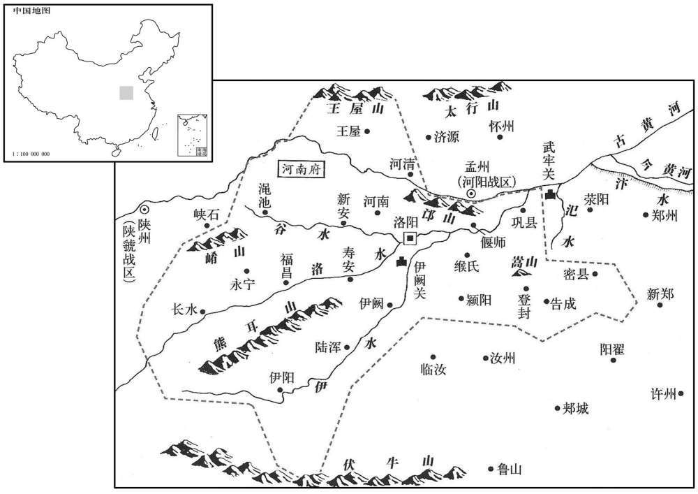
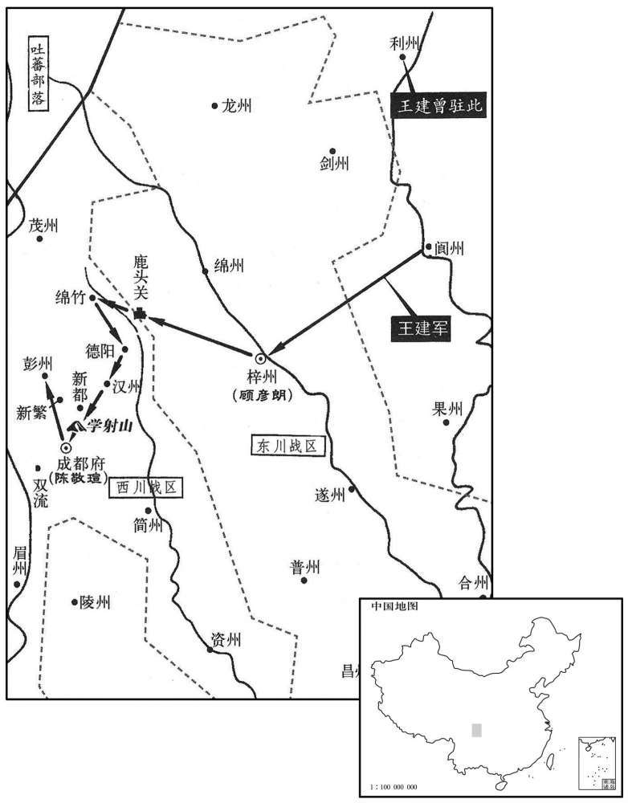
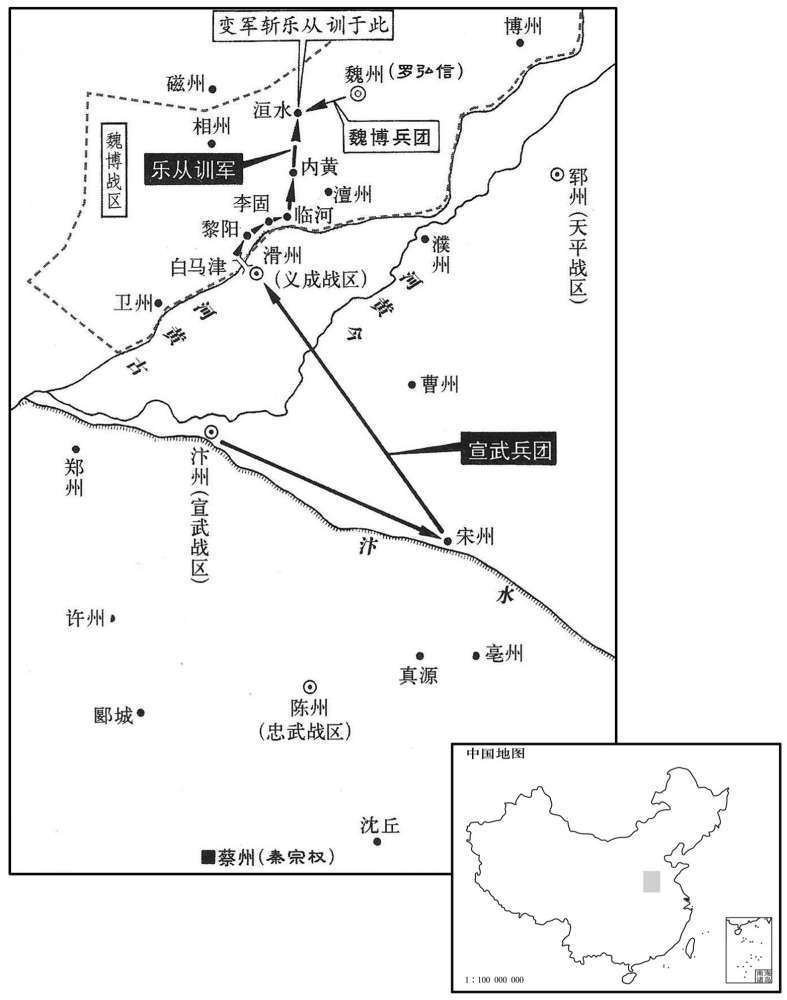
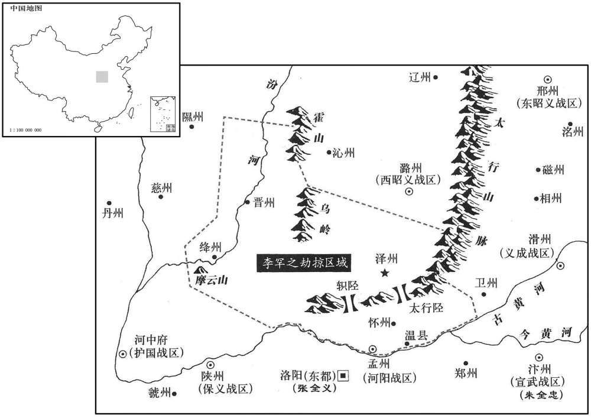
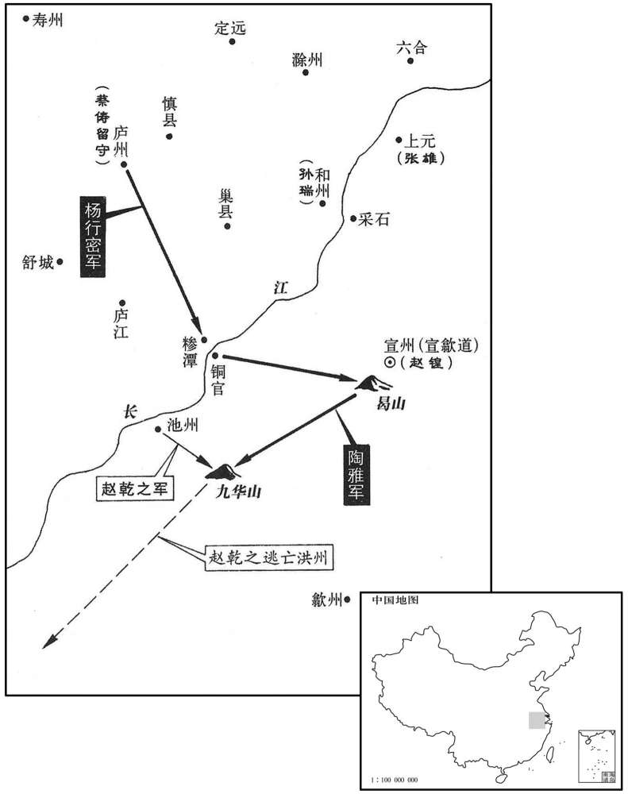

卷次与人物目录 / 卷257
资治通鉴 · 卷第二百五十七【唐纪七十三】
公元887年至公元888年 · 原文、白话与胡三省注
本页按胡注本编排保存全卷内容。白话采用本站所据译本，未可靠对应的内容另列说明；事件标题用于定位，并非原书文字。
本卷共130段原文，108段有译文对应，22段缺译或待核对。
卷第二百五十七【唐纪七十三】起强圉协洽（丁未）四月，尽着雍涒汉（戊申），凡一年有奇。
卷首原文与注释
僖宗惠圣恭定孝皇帝下之下
公元887年 · 唐僖宗惠圣恭定孝皇帝光启三年
光启三年〔（丁未、八八七）〕
上传原文的注释括号有异常，字符原样保留；无法可靠划分的段落默认全文显示。
本年记事分属相邻卷，按原书顺序分别保留：第256卷 · 第257卷。
本年事件索引（现代整理）
- 徐约驱逐苏州刺史张雄，张雄率众逃入海上
- 高骈闻秦宗权将犯淮南，命毕师铎屯高邮
- 吕用之欲见毕师铎爱妾遭拒，二人因此结怨
- 毕师铎疑惧吕用之将害己，母亲劝其自谋出路
- 四十三郎谎称吕用之将害毕师铎，毕师铎率众起兵
- 毕师铎离开高邮，留张神剑守镇并供应粮饷
- 吕用之扣押毕师铎派往广陵报信的骑兵
- 朱珍在青州募得万余人，携马返回大梁
- 朱全忠乘秦贤不备，攻破蔡军营寨
- 郭言在河阳、陕、虢募得万余兵
- 毕师铎兵临广陵，吕用之率军出城迎战
- 毕师铎退屯山光寺，派孙约向秦彦求援
- 吕用之遣许戡劝毕师铎受降，毕师铎杀使拒和
- 吕用之率甲士逼见高骈，二人自此决裂
- 高骈任从子高杰为都牢城使并交给亲兵
- 吕用之征发城中丁壮登城守备
- 高骈派石锷携家书与手札求和并接回毕师铎之子
- 秦彦遣兵入援，毕师铎攻破扬州罗城，吕用之逃走
- 毕师铎纵兵劫掠后与高骈会面，自任节度副使
- 申及劝高骈趁夜逃离广陵，高骈犹豫不决
- 毕师铎搜捕并处死吕用之党羽，兼判扬州府事
- 郑汉章劝毕师铎勿迎秦彦渡江，毕师铎不听
- 毕师铎将高骈迁居南第并派兵看守
- 原文仅存项目符号，正文缺失
- 高骈积存的盐铁财物与宫廷仪仗悉被乱军掠夺
- 诸葛殷被捕杖杀，郑杞遭酷刑处死
- 朱全忠乘雾袭击卢瑭，接连击败蔡州军
- 毕师铎得知高骈暗中赂守卫，重新囚禁高氏子弟
- 张雄率众自海入江，屯东塘并遣赵晖据上元
- 吕用之假高骈文牒召杨行密援军，杨行密率兵赴扬州
- 朱全忠出兵大破张晊，秦宗权率精兵赴援
- 张神剑因毕师铎未允分取财物，携高邮粮仓归附杨行密
- 朱全忠联合兖、郓援军，在边孝村大败秦宗权
- 钱镠遣杜棱等将领率兵讨伐薛朗
- 秦彦率宣州军沿江进入广陵，自任淮南留后，杨行密围城
- 杨守立与李昌符部争道交战，李昌符败逃陇州
- 常行儒杀害王重荣，王重盈入河中处决常行儒
- 亳州将谢殷驱逐刺史宋衮
- 李罕之与张全义收拢余部，分别据河阳与东都
- 张全义恢复洛阳户口田地，百姓逐渐富庶
- 杜棱等在阳羡击败薛朗部将李君暀
- 吴苗率八千人越城投降杨行密
- 李茂贞克陇州，斩杀李昌符并灭其族
- 朱全忠派霍存袭击亳州，斩杀谢殷
- 李茂贞拜相出任凤翔节度使
- 韦昭度任太保兼侍中
- 朱全忠攻打兖、郓，朱氏兄弟与全忠结怨
- 秦彦授官笼络张雄等人，张雄转而援助杨行密
- 杨行密设伏大败毕师铎、郑汉章所部
- 张浚拜相
- 秦彦命人杀害高骈及高氏子弟
- 朱全忠在范县击败并擒杀朱罕
- 郑汉章率军击破张神剑、高霸营寨
- 朱珍中朱瑄诈书伏击，宣武军被杀数千
- 僖宗立皇子李升为益王
- 钱镠迎周宝回杭州，杜棱等夺回常州
- 杨行密攻破广陵，秦彦、毕师铎出逃，城中饥荒严重
- 秦宗权遣秦宗衡、孙儒等率军渡淮争夺扬州
- 孙儒杀秦宗衡后拒绝回蔡州，转攻高邮
- 朱珍与李唐宾互疑，各自离营投奔朱全忠
- 朱全忠信任敬翔，军政谋略多采纳其建议
- 张神剑率部归杨行密，孙儒屠高邮，杨行密诛神剑及降兵
- 杨行密迁高邮百姓入广陵，并与高霸结为兄弟
- 秦宗权攻陷郑州
- 朝廷任朱全忠兼淮南节度使、东南面招讨使
- 陈敬瑄召王建入川，王建率精兵西行
- 陈敬瑄反悔闭关，王建破关攻取汉州、德阳
- 僖宗遣使调停陈敬瑄与王建
- 杨行密处死高霸、丁从实及其部众
- 杨行密识破吕用之谋逆，腰斩用之并诛其党
- 杨行密遣兵归和州、庐州，暂避扬州战祸
- 张雄攻陷上元，赵晖出逃后被部下杀死
- 朱全忠派张廷范携诏任杨行密淮南副使、李璠为留后
- 时溥不满朱全忠领淮南，拒其借道，徐汴交恶
- 秦宗权部将赵德諲攻陷荆南，节度使张濬离城而去
- 陈儒攻陷衢州
- 冯敬章攻陷蕲州
- 周宝卒于杭州
- 钱镠夺取润州，擒获薛朗
夏，四月，甲辰朔，约逐苏州刺史张雄，〔考异曰：吴越备史：「四月，六合镇将徐约攻陷苏州。约，曹州人也，初从黄巢攻天长，遂归高骈，骈用为六合镇将。浙西周宝子伲杨茂实为苏州刺史，约攻破之，遂有其地。」据实录，宝以其伲为苏州刺史，朝廷已除赵载代之。张雄据苏州必在载后，备史恐误。今从新纪、传。〕帅其众逃入海。〔此句上更有一「雄」字，文意乃足。张雄据苏州见上卷上年。帅，读曰率。〕
夏季，四月，甲辰朔（初一），徐约赶走苏州刺史张雄，张雄率领他的人马逃往海上。
高骈闻秦宗权将寇淮南，遣左厢都知兵马使毕师铎将百骑屯高邮。〔铎将以下皆即亮翻。〕
高骈听说秦宗权将要侵扰淮南，派遣左厢都知兵马使毕师铎带领一百骑兵驻扎高邮。
时吕用之用事，宿将多为所诛，师铎自以黄巢降将，常自危。〔毕师铎降高骈，见二百五十三卷干符六年。〕师铎有美妾，用之欲见之，师铎不许；用之因师铎出，窃往见之，师铎惭怒，出其妾，由是有隙。
当时吕用之当权，有丰富经验的老将大多被他诛杀，毕师铎因为是从黄巢那里投降过来的将领，常常为自己的安危担忧。毕师铎有一个漂亮的小妾，吕用之想见见她，毕师铎不准许；吕用这趁着毕师铎外出的机会，偷偷地前去看那美妾，毕师铎羞愧恼怒，将小妾休掉，为此毕师铎与吕用之结下了仇怨。
师铎将如高邮，用之待之加厚，师铎益疑惧，谓祸在旦夕。师铎子娶高邮镇遏使张神剑女，师铎密与之谋，神剑以为无是事。神剑名雄，人以其善用剑，故谓之「神剑」。〔考异曰：十国纪年：「张雄，淮南人，善剑，号张神剑。」今欲别于前苏州刺史张雄，故从妖乱志，但称神剑。〕时府中籍籍，亦以为师铎且受诛，〔汉书：事籍籍如此。颜师古注云：籍籍，纷纷也。〕其母使人语之曰：「设有是事，汝自努力前去，勿以老母、弱子为累！」〔语，牛倨翻。累，良瑞翻。〕师铎疑未决。
毕师铎将要去高邮，吕用之对待他更加优厚，毕师铎却越来越疑虑恐惧，认为大祸就在眼前了。毕师铎的儿子纳娶高邮镇遏使张神剑的女儿为妻，毕师铎去与张神剑秘密商谋，张神剑认为吕用之不会加害毕师铎。张神剑本名张雄，人们因为他善于用剑，所以叫他张神剑。当时高邮府内众说纷纭，也有的人认为毕师铎将要遭受杀身大祸，毕师铎的母亲派人对毕师铎说：“如果有这样的事，你自己要想方设法离开逃走，不要因为年老的母亲、弱小的儿子拖累了你！”毕师铎犹豫不决。
会骈子四十三郎者素恶用之，〔恶，乌路翻。〕欲使师铎帅外镇将吏疏用之罪恶，闻于其父，〔帅，读曰率。〕密使人绐之曰：「用之比来频启令公，〔比，毗至翻，近也。襄王熅加骈中书令，故称令公。绐，徒亥翻。〕欲因此相图，已有委曲在张尚书所，〔当时机密文书谓之委曲。张尚书，谓神剑。〕宜备之！」师铎问神剑曰：「昨夜使司有文书，〔使司，谓淮南节度使司。〕翁胡不言﹖」〔以婚姻呼之为翁。〕神剑不寤，曰：「无之。」师铎不自安，归营，谋于腹心，皆劝师铎起兵诛用之，师铎曰：「用之数年以来，人怨鬼怒，安知天不假手于我诛之邪！淮宁军使郑汉章，我乡人，〔按新书高骈传：骈置淮宁军于淮口。毕师铎、郑汉章皆冤句人。〕昔归顺时副将也，〔谓去黄巢归高骈时也。〕素切齿于用之，闻吾谋，必喜。」乃夜与百骑潜诣汉章，汉章大喜，悉发镇兵及驱居民合千余人从师铎至高邮。师铎诘张神剑以所得委曲，〔诘，极吉翻。〕神剑惊曰：「无有。」师铎声色浸厉，神剑奋曰：「公何见事之暗！用之奸恶，天地所不容。况近者重赂权贵得岭南节度，复不行，〔事见上卷上年。复，扶又翻。〕或云谋窃据此土，使其得志，吾辈岂能握刀头事此妖物邪！要寛此数贼以谢淮海，何必多言！」〔寛，古瓦翻。禹贡曰：淮海惟扬州。〕汉章喜，遂命取酒，割臂血沥酒，共饮之。乙巳，众推师铎为行营使，为文告天地，移书淮南境内，言诛用之及张守一、诸葛殷之意。以汉章为行营副使，神剑为都指挥使。
恰好高骈的一个叫四十三郎的儿子一向憎恨吕用之，想让毕师铎率领在外镇守的将领官吏分条陈述吕用之的罪恶行径，报告给他的父亲高骈，并且暗中派人欺骗毕师铎说：“吕用之近年来一再诱导高骈，想要以此来谋害你，已经有机密文书在张神剑那里，应当早作防备！”毕师铎去问张神剑说：“昨天夜间淮南节度使司送来了机密信函，你怎么不对我说？”张神剑不清楚怎么回事，说：“没有什么机密信函。”毕师铎不能安下心来，便回到军营中，与心腹亲信商量对策，都劝毕师铎发兵讨伐吕用之，毕师铎说：“多年来，对吕用之人民怨恨，鬼神愤怒，苍天是不是要借助我的力量来诛灭吕用之呀！淮宁军使郑汉章，是我的同乡，当初离开黄巢投奔高骈时是个副将，一向痛恨吕用之，如果知道了我讨伐吕用之的计谋，他一定会高兴的。”于是毕师铎连夜与一百骑兵秘密到达郑汉章那里，郑汉章大为高兴，把镇所的军队全部发动起来又驱使当地百姓总共一千余人跟随毕师铎到达高邮。毕师铎追问张神剑收到的秘密文书，张神剑惊异地说：“根本没有机密信函。”毕师铎的声色更加严厉，张神剑激奋地说道：“你看事情怎么这样糊涂！吕用之奸邪凶恶，是天地所不容的。况且近来他大肆贿赂身居高位有权势的人，得到岭南东道节度使的官职，又不前去赴任，有的人说吕用之是在筹谋夺取这里的地盘，假使他的狂妄野心得逞，我们这些人怎么能够手握刀把为这种妖魔鬼怪做事！我们要把吕用之这几个乱臣贼子千刀万剐以答谢淮海一带的人民，还有什么可说的！”郑汉章听后大快，于是命令拿酒来，用刀划破胳膊让血滴到酒里，把酒喝掉，乙巳（初二），大家推举毕师铎为行营使，起草檄文祭告天地，向淮南境内传送檄文，说明讨伐吕用之以及张守一、诸葛殷的意图。委任郑汉章为行营副使，张神剑为都指挥使。
神剑以师铎成败未可知，请以所部留高邮，曰：「一则为公声援，二则供给粮饷。」师铎不悦，汉章曰：「张尚书谋亦善，苟终始同心，事捷之日，子女玉帛相与共之，今日岂可复相违！」〔复，扶又翻。〕师铎乃许之。戊申，师铎、汉章发高邮。
张神剑因为毕师铎的成功和失败还难以预料，请求带领所部人马留在高邮，他对毕师铎说：“这样，一则为你做声援，二则可供给军粮兵饷。”毕师铎对此不高兴，郑汉章说：“尚书张神剑的计谋也不错，如果你们自始至终同心同德，等到事毕告捷的日子，美女宝玉缎帛共同分享，现在怎么可以不保持一致！”毕师铎于是同意张神剑留守高邮。戊申（初五），毕师铎、郑汉章从高邮出发。
庚戍，诇骑以白高骈，〔自高邮东南至扬州一百里。诇，翾正翻，又火迥翻。〕吕用之匿之。
两版字句有差异，建议核对原文。
庚戌（初七），毕师铎派告密骑兵前往广陵向高骈禀告出师情由，被吕用之隐匿起来。
朱珍至淄青旬日，应募者万余人，又袭青州，获马千匹；〔时王敬武镇淄青，朱珍以他镇之将来募兵，既不能制，又为所袭。盖群盗纵横，力强者胜，莫适为主故也。〕辛亥，还，至大梁，朱全忠喜曰：「吾事济矣。」
朱珍到达淄青召募军队，十几天内就有一万余人应募，朱珍又率众攻打青州，获得马匹一千。辛亥（初八），朱珍返回，到达大梁，朱全忠高兴地说：“我的事业成功了！”
时蔡人方寇汴州，其将张晊屯北郊，秦贤屯板桥，〔北郊，谓汴州城北郊原之地，即赤冈也。据旧史，板桥在汴州城西。〕各有众数万，列三十六寨，连延二十余里。全忠谓诸将曰：「彼蓄锐休兵，方来击我，未知朱珍之至，谓吾兵少，畏怯自守而已；宜出其不意，先击之。」乃自引兵攻秦贤寨，士卒踊跃争先；贤不为备，连拔四寨，斩万余级，蔡人大惊，以为神。
本段缺少可靠对应白话，原文完整保留；未使用生成译文。
全忠又使牙将新野郭言募兵于河阳、陕、虢，得万余人而还。〔陕，失冉翻。还，从宣翻，又如字。〕
本段缺少可靠对应白话，原文完整保留；未使用生成译文。
毕师铎兵奄至广陵城下，城中惊援。壬子，吕用之引麾下劲兵，诱以重赏，出城力战。〔诱，音酉。〕师铎兵少却，用之始得断桥塞门为守备。是日，骈登延和阁，〔断，丁管翻。塞，悉则翻。延和阁，骈所起，见二百五十四卷中和二年。〕闻諠噪声，左右以师铎之变告。骈惊，急召用之诘之，用之徐对曰：「师铎之众思归，为门卫所遏，适已随宜区处，〔处，昌吕翻。〕计寻退散；傥或不已，正烦玄女一力士耳，愿令公勿忧！」骈曰：「近者觉君之妄多矣，君善为之，勿使吾为周侍中！」〔周侍中，谓周宝也，事见上卷本年。〕言毕，惨沮；久之，用之凓懅而退。〔懅，亦惭也，音遽。〕
本段缺少可靠对应白话，原文完整保留；未使用生成译文。
师铎退屯山光寺，〔山光寺，在广陵城北。〕以广陵城坚兵多，甚有悔色；癸丑，遣其属孙约与其子诣宣州，乞师于观察使秦彦，且许以克城之日迎彦为帅。〔帅，所类翻。〕会师铎馆客毕慕颜自城中逃出，言「众心离散，用之忧窘，若坚守之，不日当溃。」师铎乃悦。
本段缺少可靠对应白话，原文完整保留；未使用生成译文。
是日未明，骈召用之，问以事本末，用之始以实对，骈曰：「吾不欲复出兵相攻，〔复，扶又翻。〕君可选一温信大将，〔温，柔和也。信，诚实不妄言者也。〕以我手扎谕之，若其未从，当别处分。」〔处，昌吕翻。按书及春秋「分器」。记曲礼「分毋求多」，汉书「分职」、「分部」，并音扶间翻；则处分之分亦当同音。今人读为分判之分，误也。〕用之退，念诸将皆仇敌，必〔【章：十二行本「必」上有「往」字；乙十一行本同。】〕不利于己，甲寅，遣所部讨击副使许戡，赍骈委曲〔委曲，即屏手札也。〕及用之誓状并酒殽出劳师铎，〔劳，力到翻。〕师铎始亦望骈旧将劳问，得以具陈用之奸恶，披泄积愤，〔披，开也，分也。决壅为泄。〕见戡至，大骂曰：「梁缵、韩问何在，乃使此秽物来！」戡未及发言，已牵出斩之。乙卯，师铎射书入城，〔射，而亦翻。〕用之不发，即焚之。
本段缺少可靠对应白话，原文完整保留；未使用生成译文。
丁巳，用之以甲士百人入见骈于延和阁下，骈大惊，匿于寝室，久而后出，曰：「节度使所居，无故以兵入，欲反邪！」命左右驱出。用之大惧，出子城南门，举策指之曰：「吾不可复入此！」〔复，扶又翻。〕自是高、吕始判矣。
本段缺少可靠对应白话，原文完整保留；未使用生成译文。
是夜，骈召其从子前左金吾卫将军杰密议军事；戊午，署杰都牢城使，泣而勉之，以亲信五百人给之。
本段缺少可靠对应白话，原文完整保留；未使用生成译文。
用之命诸将大索城中丁壮，〔索，山客翻。〕无问朝士、书生，悉以白刃驱缚登城，令分立城上，自旦至暮，不得休息；又恐其与外寇通，数易其地，〔数，所角翻。〕家人饷之，莫知所在。由是城中人亦恨师铎入城之晚也。
本段缺少可靠对应白话，原文完整保留；未使用生成译文。
骈遣大将石锷〔锷，逆各翻。〕以师铎幼子及其母书井骈委曲至扬子谕师铎，师铎遽遣其子还，曰：「令公但斩吕、张以示师铎，师铎不敢负恩，愿以妻子为质。」〔质，音致。〕骈恐用之屠其家，收师铎母妻子置使院。〔使院，节度使司官属治事之所。〕
本段缺少可靠对应白话，原文完整保留；未使用生成译文。
辛酉，秦彦遣其将秦稠将兵三千至扬子助师铎。壬戍，宣州军攻南门，不克；癸亥，又攻罗城东南隅，城几陷者数四。〔几，居依翻。〕甲子，罗城西南隅守者焚战格以应师铎，〔战格，列木为之，汉人谓之笓格，今谓之排权。〕师铎毁其城以内其众。用之帅其众千人力战于三桥北，〔帅，读曰率。〕师铎垂败，会高杰以牢城兵自子城出，欲擒用之以授师铎，用之乃开参佐门北走。骈召梁缵以昭义军百余人保子城。
本段缺少可靠对应白话，原文完整保留；未使用生成译文。
乙丑，师铎纵兵大掠。骈不得已，命彻备，与师铎相见于延和阁下，交拜如宾主之仪，署师铎节度副使、行军司马，仍承制加左仆射，郑汉章等各迁官有差。
本段缺少可靠对应白话，原文完整保留；未使用生成译文。
左莫邪都虞候申及，本徐州健将，〔高骈置左、右莫邪都，见二百五十四卷中和二年。〕入见骈，说之曰：〔说，式芮翻。〕「师铎逆党不多，〔【章：十二行本「多」下有「诸门尚未有守者」七字；乙十一行本同；孔本同；张校同；退斋校同。】〕请令公及此选元从三十人，〔及此，言及此时也。从，才用翻。〕夜自教场门出，比师铎觉之，追不及矣。〔比，必利翻，及也。〕然后发诸镇兵，还取府城，此转祸为福也。若一二日事定，浸恐艰难，及亦不得在左右矣。」言之，且泣，骈犹豫不听。〔楚灵王有言：「大福不再，祇取辱耳。」高骈盖知行留皆祸，故犹豫不听。〕及恐语泄，遂窜匿，会张雄至东塘，〔张雄弃苏州逃入海，又自海泝江而上，至扬州东塘。〕及往归之。
本段缺少可靠对应白话，原文完整保留；未使用生成译文。
丙寅，师铎果分兵守诸门，搜捕用之亲党，悉诛之。师铎入居使院，秦稠以宣军千人分守使宅及诸仓库。〔使，疏吏翻。〕丁卯，骈牒请解所任，以师铎兼判府事。
本段缺少可靠对应白话，原文完整保留；未使用生成译文。
师铎遣孙约至宣城，趣秦彦过江。〔趣，读曰促。〕或说师铎曰：〔说，式芮翻。〕「仆射向者举兵，盖以用之辈奸邪暴横，〔横，户孟翻。〕高令公坐自聋瞽，不能区理，〔区，分别也。理，调治也。〕故顺众心为一方去害。〔去，羌吕翻。〕今用之既败，军府廓然，仆射宜复奉高公而佐之，但总其兵权以号令，谁敢不服！用之乃淮南一叛将耳，移书所在，立可枭擒。如此，外有推奉之名，内得兼并之实，虽朝廷闻之，亦无亏臣节。使高公聪明，必知内愧；如其不悛，〔悛，丑缘翻，改也。〕乃机上肉耳，柰何以此功业付之他人，岂惟受制于人，终恐自相鱼肉！前日秦稠先守仓库，其相疑已可见。且秦司空为节度使，庐州、寿州其肯为之下乎！〔庐州，杨行密。寿州，张翱。〕仆见战攻之端未有穷已，岂惟淮南之人肝脑涂地，窃恐仆射功名成败未可知也！不若及今亟止秦司空〔亟，纪力翻，急也。〕勿使过江，彼若粗识安危，必不敢轻进；〔粗，坐五翻。〕訧使他日责我以负约，犹不失为高氏忠臣也。」师铎大以为不然，明日，以告郑汉章，汉章曰：此智士也！」散求之，其人畏祸，竟不复出。〔复，扶又翻。〕
本段缺少可靠对应白话，原文完整保留；未使用生成译文。
戊辰，骈迁家出居南第，师铎以甲士百人为卫，其实囚之也。是日，宣军以所求未获，焚进奉两楼数十间，宝货悉为煨烬。〔新书高骈传：骈自干符以来，贡献不入天子，宝货山积于进奉楼。按骈干符末始自浙西徙淮南，中和二年罢兵权利权，贡献始绝矣。煨，乌回翻。烬，徐刃翻。〕己巳，师铎于府厅视事，凡官吏非有兵权者皆如故，复迁骈于东第。〔复，扶又翻；下同。〕自城陷，诸军大掠〔【章：十二行本「掠」下有「昼夜」二字；乙十一行本同；孔本同；张校同。】〕不已，至是，师铎始以先锋使唐宏为静街使，禁止之。
本段缺少可靠对应白话，原文完整保留；未使用生成译文。
•
本段缺少可靠对应白话，原文完整保留；未使用生成译文。
骈先为盐铁使，〔干符六年，骈为盐铁转运使，中和二年，解使职。〕积年不贡奉，货财在扬州者，填委如山。骈作郊天、御楼六军立仗仪服，〔郊天及御楼肆赦，六军皆立仗。〕及大殿元会、内署行幸供张器用，皆刻镂金玉、蟠龙蹙凤数十万事，悉为乱兵所掠，归于闾阎，张陈寝处其中。〔供，居用翻。张，知亮翻；张陈同。镂，郎豆翻。处，昌吕翻。〕
本段缺少可靠对应白话，原文完整保留；未使用生成译文。
庚午，获诸葛殷，杖杀之，弃尸道旁，怨家抉其目，断其舌，〔决，于决翻。断，都管翻；下断手同。〕众以瓦石投之，须臾成耱。吕用之之败也，其党郑杞首归师铎，师铎署杞知海陵监事。〔海陵监，筦榷鬻盐。〕杞至海陵，阴记高霸得失，闻于师铎。〔高霸时为海陵镇遏使。〕霸获其书，杖杞背，断手足，刳目截舌，然后斩之。
本段缺少可靠对应白话，原文完整保留；未使用生成译文。
蔡将卢瑭屯于万胜，〔万胜镇在中牟县。〕夹汴水而军，以绝汴州运路，〔薛史梁纪曰：卢瑭于圃田北夹汴水为梁，以扼运路。宋白亦曰：万胜寨在圃田北。〕朱全忠乘雾袭之，掩杀殆尽。〔考异曰：薛居正五代中云「四月庚午。」按长历，四月甲辰朔，无庚午。薛史误。〕于是蔡兵皆徙就张晊，屯于赤冈；〔赤冈在汴城北。〕全忠复就击之，杀二万余人。蔡人大惧，或军中自相惊，全忠乃还大梁，养兵休士。
蔡州军队将领卢瑭驻扎中牟县万胜镇，他在汴水两侧安置军营，以便断绝汴州城的运输途径，朱全忠乘着大雾去攻打，将卢瑭的人马几乎消灭光了。于是，蔡州的军队都转移到张那里，汴州城北的赤冈驻扎；朱全忠再次率众前去攻打，斩杀二万余人。蔡州人十分恐惧，有时在军营内就自相惊慌起来，朱全忠于是回到大梁，休养整顿军队。
辛未，高骈密以金遗守者，〔骈冀守者恩之，因以求出。遗，唯季翻。〕毕师铎闻之，壬午，复迎骈入道院，〔道院，高骈所起以迎神仙。〕收高氏子弟甥侄十余人同幽之。
辛未（二十八日），高骈暗中向看守他的士兵赠送金钱，毕师铎察觉到这事，壬午（疑误），又把高骈接入道院，把高骈的儿子兄弟外甥侄子十几个都一同集中幽禁起来。
前苏州刺史张雄帅其众自海泝江，屯于东塘，遣其将赵晖入据上元。〔张雄、冯弘铎由此得据升州。帅，读曰率。〕
以前的苏州刺史张雄率领他的人马从海上沿着长江逆流而上，在东塘驻扎，他还派遣属下将领赵晖开进并占据了上元。
毕师铎之攻广陵也，吕用之诈为高骈牒，署庐州刺史杨行密行军司马，追兵入援。庐江人袁袭说行密曰：「高公昏惑，用之奸邪，师铎悖逆，凶德参会，〔三者合集为参会。说，式芮翻。〕而求兵于我，此天以淮南授明公也，趣赴之。」〔趣，读曰促。〕行密乃悉发庐州兵，复借兵于和州刺史孙端，〔复，扶又翻。考异曰：妖乱志：「中和三年，高骈差梁缵知和州。缵以孙端窥伺和州已久，不如因而与之以责其效。骈强之，既行，果为端所败。及归，和州寻陷于端。」盖端自是遂据和州也。〕合数千人赴之，五月，至天长。郑汉章之从师铎也，留其妻守淮口，用之帅众攻之，〔帅，读曰率。〕旬日不克，汉章引兵救之。用之闻行密至天长，引兵归之。〔为用之为行密所诛张本。〕
毕师铎攻打广陵时，吕用之假借高骈的名义颁布公文，暂任庐州刺史杨行密为行军司马，命他派军队来广陵救援。庐江人袁袭劝告杨行密说：“高骈昏庸糊涂，吕用之奸诈邪恶，毕师铎叛逆作乱，这三个人合在一起可以说是恶劣德行的大汇聚，现在来请求我们出兵救援，这是天意把淮南授给你，你应当马上前赴广陵。”杨行密于是把庐州军队全部发动起来，又向和州刺史孙端求借军队，集合几千人马开赴广陵。五月，到达天长。当初郑汉章跟随毕师铎出征广陵，留下他的妻子守卫淮口，吕用之便带领人马攻打淮口，十天时间没有攻克，郑汉章率领军队回来应救。吕用之听说杨行密到达天长，便带着人马返回。
丙子，朱全忠出击张晊，大破之。秦宗权闻之，自郑州引精兵会之。〔宗权引兵会晊以击全忠。〕
丙子（初三），朱全忠派出军队攻打张，张大败。秦宗权获悉，从郑州带领精壮军队与张相会以抗击朱全忠。
张神剑求货于毕师铎，师铎报以俟秦司空之命，神剑怒，亦以其众归杨行密；及海陵镇遏使高霸、曲溪人刘金、盱眙人贾令威悉以其众属焉。〔扬州盱眙县西南十里有曲溪。刘金，曲溪屯将也。〕行密众至万七千人，张神剑运高邮粮以给之。
张神剑向毕师铎请求资财，毕师铎回答他要等秦彦的命令，张神剑很恼怒，也带领他的人马投归了杨行密；接着海陵镇遏使高霸、曲溪人刘金、盱眙人贾令威都率领所部人马归属杨行密。杨行密的军队达到一万七千人，张神剑运送高邮的粮食供给这些军队需用。
朱全忠求救于兖、郓，朱瑄、朱瑾皆引兵赴之，义成军亦至。〔二年，朱全忠并义成军，征其兵以击蔡人。〕章巳，全忠以四镇兵攻秦宗权于边孝村，大破之，〔边孝村，在汴州北郊。〕斩首二万余级；宗权宵遁，全忠追之，至阳武桥而还。〔阳武桥在郑州阳武县，县在汴州西北九十里。还，从宣翻，又如字。〕全忠深德朱瑄，兄事之。蔡人之守东都河阳、许、汝、怀、郑、陕、虢者，闻宗权败，皆弃去。宗权发郑州，孙儒发河阳，皆屠灭其人，焚其庐舍而去，宗权之势自是稍衰。朝廷以扈驾都头杨守宗知许州事，朱全忠以其将孙从益知郑州事。
朱全忠向兖州、郓州请求救援，朱、朱瑾都带领人马前往，义成军也赶到。辛巳（初八），朱全忠指挥四个镇所的军队在汴州北郊的边孝村攻打秦宗权，将他打败，斩杀两万余人。秦宗权夜间逃跑，朱全忠追赶他，直到阳武桥才返回。朱全忠深深地感恩朱，把他当作兄弟对待。蔡州军队中护守东都、河阳、许州、汝州、怀州、郑州、陕州、虢州的人，听说秦宗权失败，都纷纷离去。秦宗权征发郑州，孙儒征发河阳，都大肆屠杀那里的人民，焚烧当地的房屋而后离去，秦宗权的势力从这以后有所衰落。朝廷任命扈驾都头杨守宗掌管许州事宜，朱全忠委任属下将领孙从益掌管郑州事宜。
钱镠遣东安都将杜棱、浙江都将阮结、静江都将成及将兵讨薛朗。〔九域志：杭州新城县有东安镇。浙江、静江二都，盖分屯杭州城外沿江一带，自定山下至海门。讨薛朗，以其逐周宝也。〕
钱派遣东安都将杜棱、浙江都将阮结、静江都将成及带领军队讨伐薛朗。
甲午，秦彦将宣歙兵三万余人，乘竹筏沿江而下，赵晖邀击于上元，杀溺殆半。〔歙，书涉翻。〕丙申，彦入广陵，自称权知淮南节度使，〔【章：十二行本「使」作「事」；乙十一行本同；张校同，云无注本作「使」。】〕仍以毕师铎为行军司马，补池州刺史赵锽为宣歙观察使。〔锽，户盲翻。〕戊戍，杨行密帅诸军抵，广陵城下，为八寨以守之，〔帅，读曰率；下同。〕秦彦闭城自守。〔考异曰：妖乱志：「六月，癸卯朔，秦彦命郑汉璋等守诸门。」按寇至城下，即应城守，岂有戊戍行密至，癸卯始守城乎！今不取。〕
甲午（二十一日），秦彦带领宣歙军队三万余人，乘坐竹筏沿着长江向下开进，赵晖在上元拦截阻击，斩杀和溺死水中的人将近一半。丙申（二十三日），秦彦进入广陵城，自称暂时管理淮南节度使事务，仍然委任毕师铎为行军司马，补授池州刺史赵为宣歙观察使。戊戌（二十五日），杨行密率领各路军队抵达广陵城下，安设八个营寨自守，秦彦则关闭城门固守。
六月，戊申，天威都头杨守立〔天威，亦神策五十四都之一。〕与凤翔节度使李昌符争道，麾下相殴，〔殴，乌口翻，击也。〕帝命中使谕之，不止。是夕，宿卫皆严兵为备。己酉，昌待拥兵烧行宫，庚戍，复攻大安门。〔复，扶又翻。〕守立与昌符战于通衢，昌符兵败，帅麾下走保陇州。〔九域志：凤翔至至陇州一百五十里。〕杜让能闻难，挺身步入侍；韦昭度质其家于军中，〔难，乃旦翻。质，音致。〕誓诛反贼，故军士力战而胜之。守立，复恭之假子也。壬子，以扈驾都将、武定节度仗李茂贞〔李茂贞时领武定节宿卫。〕为陇州招讨使，以讨昌符。
六月，戊申（初六），神策军中的天威都头杨守立与凤翔节度使李昌符二人争抢道路，部下殴打起来，唐僖宗命令宦官传谕劝解，竟不能罢休。这天夜晚，宫中值宿士兵严阵以待防备不测。已酉（初七），李昌符带领军队焚烧唐僖宗的行宫；庚戌（初八），李昌符又攻打大安门。杨守立与李昌符在宫外道路上对战，最后李昌符的军队战败，率领手下人马逃往陇州固守。在这期间，杜让能听说皇宫有难，挺身而出进入宫中护卫唐僖宗；韦昭度则把他的家人放在军营中作为人质，以表示他誓死斩杀谋反贼子的决心，因此军中士卒竭力苦战，终于战胜。杨守立，是杨复恭的养子。壬子（初十），朝廷任命扈驾都武、武定节度李茂贞为陇州招讨使，以讨伐李昌符。
甲寅，河中牙将常行儒杀节度使王重荣。重荣用法严，末年尤甚；行儒尝被罚，耻之，〔被，皮义翻。〕遂作乱。夜，攻府舍，重荣逃于别墅；〔墅，承与翻。〕明旦，行儒得而杀之。制以陕虢节度使王重盈为护国节度使，又以重盈子珙权知陕虢留后。〔珙，居勇翻。〕重盈至河中，执行儒，杀之。〔旧书帝纪云：常行儒杀王重荣，推重荣兄重盈为兵马留后。〕
甲寅（十二日），河中牙将常行儒将节度使王重荣杀死。王重荣执行法度极其严格，到了晚年更为厉害；常行儒曾经被王重荣处罚，对此感到很耻辱，于是发动了叛乱。夜间，常行儒攻打王重荣的府第，王重荣逃到别墅；第二天早晨，常行儒抓获王重荣并将他杀掉。朝廷下命委任王重荣的哥哥陕虢节度使王重盈为护国节度使，又任命王重盈的儿子王珙暂任陕虢留后。王重盈到达河中，抓获常行儒，将他杀掉。
壬戍，亳州将谢殷逐其刺史宋衮。
两版字句有差异，建议核对原文。
壬戌（二十日），毫州将领谢殷驱逐毫州刺史宋衮。
孙儒既去河阳，李罕之召张全义于泽州，〔去年，孙儒陷河阳，张全义据怀州，李罕之据泽州以拒之。盖怀州逼近河阳，全义寻退屯泽州也。旧书帝纪云：李罕之自泽州收河阳，怀州刺史张全义收洛阳。〕与之收合余众。罕之据河阳，全义据东都，共求援于河东；李克用以其将安金俊为泽刺史，将骑助之，〔考异曰：太祖纪年录：「七月，癸巳，泽州刺史张全义弃城而遁，太祖以安金俊为泽州刺史。」薛居正五代史亦云：「七月，武皇以金俊为泽州刺史。」按实录，六月，全义已除河南尹。薛史罕之傅，罕之求援，克用遣泽州刺史安金俊助之，盖二人先以泽州赂克用，非七月也。〕按实录，六月，全义已除河南尹。薛史罕之传，罕之求援，克用遣泽州刺史安金俊助之，盖二人先以泽州赂克用，非七月也。〕表罕之为河阳节度使，全义为河南尹。〔考异曰：薛居正五代史：「克用表张言为河南尹、东都留守。」实录：「以泽州刺史李罕之为河阳节度使，怀州刺史张全义为河南尹。」按诸葛爽表全义为泽州刺史，及仲方败，罕之据择州，全义据怀州耳，非刺史也。〕
两版字句有差异，建议核对原文。
孙儒既然已离开了河阳，李罕之便在泽州召来张全义，和他一道把剩下的人马收集起来。李罕之占据河阳，张全义占据东都洛阳，一同向河东节度使李克用请求援助；李克用任命手下将领安金俊为泽州刺史，带领骑兵前往援助，并进呈表章任命李罕之为河阳节度使，张全义为河南尹。

初，东都经黄巢之乱，遗民聚为三城以相保，继以秦宗权、孙儒残暴，仅存坏垣而已。全义初至，白骨蔽地，荆棘弥望，居民不满百户，全义麾下纔百余人，相与保中州城，〔城在二城之中间，故谓之中州城。〕四野俱无耕者。全义乃于麾下选十八人材器可任者，人给一旗一牓，谓之屯将，〔将，即高翻。〕使诣十八县故墟落中，植旗张牓，招怀流散，劝之树艺。〔河南二十县，河南、洛阳二县在城中，其外偃师、巩、缑氏、阳城、登封、陆浑、伊阙、新安、渑池、福昌、长水、永宁、寿安、密、河清、颍阳、伊阳、王屋，凡十八县。〕惟杀人者死，余但笞杖而已，无严刑，无租税，民归之者如市。又选壮者教之战陈，以御寇盗。〔陈，读曰阵。〕数年之后，都城坊曲，渐复旧制，诸县户口，率皆归复，桑麻蔚然，野无旷土。〔蔚，音郁。不耕之土日旷土。旷，空也。〕其胜兵者，〔胜，音升。〕大县至七千人，小县不减二千人，乃奏置令佐以治之。〔治，直之翻。〕全义明察，人不能欺，而为政宽简。出，见田畴美者，辄下马，与僚佐共观之，召田主，劳以酒食；〔劳，力到翻。〕有蚕麦善收者，〔蚕四伏无病而成疬，麦就实黄熟而丰厚，为善收。〕或亲至其家，悉呼山峔幼，赐以茶彩衣物。民间言：「张公不喜声伎，〔喜，许记翻。伎，渠绮翻。〕见之未尝笑；独见佳麦良疬则笑耳。」有田荒秽者，则集众杖之；或诉以乏人牛，乃召其邻里责之曰：「彼诚乏人牛，何不助之！」众皆谢，乃释之。由是邻里有无相助，故比户皆有蓄积，〔比，毗至翻，又毗必翻。〕凶年不饥，遂成富庶焉。〔史究言张全义治河南之绩效。〕
当初，东都洛阳经过黄巢的战乱，劫后遗留的百姓聚集成为三个城以相互保护，接着又有秦宗权、孙儒的残酷暴行，留下的仅仅是残垣断壁。张全义刚到这里时，只见白骨遍地，放眼望去到处是丛生的草木，居民总共不到一百户，张全义的部下才一百多人，共同守卫三城中间的中州城，四周田野都没有耕作的人。张全义于是在手下中挑选了十八个才能器度可以任用的人，每人发给一面旗帜一张榜文，称作屯将，派他们分别到河南十八个县旧有的村落之中，立起大旗张贴榜文，招收抚恤四处流散的百姓，规劝他们种植耕作。只有犯了杀人罪的处死，其他罪过仅予笞打杖击，没有严酷刑罚，不收田租赋税，因此老百姓前来归顺的象赶集一样。张全义还挑选精明强壮百姓教授作战阵法，以防御贼寇强盗。几年之后，河南各地的城市店铺乃至小巷，都渐渐地恢复了原来的规模式样，各县的民户人口，大多都回归，各种农作物生长茂盛，田野里再也没有空旷的地方。各地负担供养的军队，大县达到七千人，小县也不少于二千人，于是张全义进呈奏章请设置县令佐官治理地方。张全义精明强士，人们对他不能有欺隐，同时他办理政务又宽厚简明。张全义外出，看见田地中的作物很茂盛，就下马，与身边的臣僚共同观赏，召来田地的主人，用美酒好饭慰劳他；有善于养蚕种麦的人获得丰收，张全义有时就到这些人的家里，把男女老幼都叫出来，赏赐给他们茶叶丝绸和衣物等物。当时在民间传着这样的话：“张全义大人不喜好歌妓舞女，看到这些没见过他发笑；唯独看到茂盛的麦田和上好的蚕丝他就满面笑容。”有的人将田地荒芜了，张全义就召集众人当面杖打进行惩罚；有的人申诉说缺乏人手和耕牛，张全义便把他的邻居叫来责问：“他如果确实缺少劳力耕牛，你们为什么不帮助他！”大家都表示谢罪，张全义才把人放回。由于这样，在邻里之间互通有无彼此帮助，因此各户钱粮都有积蓄，灾年也不致有饥荒，于是富庶起来。
杜棱等败薛朗将李君暀于阳羡。〔败，补迈翻。暀，于放翻。阳羡，汉古县，晋立义与郡，隋废郡，改阳羡为义兴县。唐武德七年，分义与置阳羡县，寻省并入义与。九域志：义与县在常州西南百二十里。〕
杜棱等人在阳羡打败薛朗的将领李君。
秋，七月，癸未，淮南将吴苗帅其徒八千人踰城降杨行密。〔帅，读曰率。〕
秋季，七月，癸未（十二日），淮南将领吴苗率领手下八千人马越过城池向杨行密投降。
八月，壬寅朔，李茂贞奏陇州刺史薛知筹以城降，斩李昌符，灭其族。〔中和元年，李昌言逐郑畋据岐，兄弟七年而灭。〕
八月，壬寅朔（初一），李茂贞奏报陇州刺史薛知筹献出陇州城投降，斩杀李昌符，诛灭了李昌符的全族人。
朱全忠引兵过亳州，遣其将霍存袭谢殷，斩之。〔是年六月，谢殷杀刺史，据亳州。〕
朱全忠带领军队经过毫州，派遣属下将领霍存攻打谢殷，将他斩杀。
丙子，以李茂贞同平章事、充凤翔节度使。〔为李茂贞以岐兵跋扈张本。〕
丙子（疑误），朝廷任命李茂贞为同平章事、充任凤翔节度使。
以韦昭度守太保、兼侍中。
朝廷任命韦昭度兼理太保、兼任侍中。
朱全忠欲兼兖、郓，而以朱瑄兄弟有功于己，〔朱瑄兄弟救汴州，破蔡兵。〕攻之无名，乃诬瑄招诱宣武军士，移书诮让。瑄复书不逊，〔考异曰：编遗录：「八月，丙午，都指挥使朱珍以诸都将士日有逃逸者，初未晓其端，今乃知为郓帅朱瑄因前年与我师会合讨伐蔡寇，睹将士骁勇，潜有窥觊之心，密于境上悬金帛招诱，如至者皆厚而纳焉。积亡既多，上察之，且不平。是事，因移文追索亡者，朱瑄来言不逊，上益怒其欺罔，乃议举兵伐之。」新传：「全忠与朱瑄情好笃密，而内忌其雄，且所据皆劲兵地，欲造怨，乃图之，即声言瑄纳汴亡命，移书让瑄，以新有恩于全忠，故答檄恚望。全忠由是显结其隙。」高若拙后史补曰：「梁太祖皇帝到梁园，深有大志，然兵力不足，常欲外掠，又虞四境之难，每有郁然之状。时有荐敬秀才于门下，乃白梁祖曰：『明公方欲图大事，轻重必为四境所侵，但令麾下将士诈为判者而逃，即明公奏于主上及告四邻，以自袭叛徒为名。』梁祖曰：『天降奇人以佐于吾。』初从其谋，一出而致众十倍。」盖翔为温画策，诈令军士叛归瑄，以为衅端也。〕全忠遣其将朱珍、葛从周袭曹州，壬子，拔之，杀刺史丘弘礼。又攻濮州，与兖、郓兵战于刘桥，〔刘桥，在曹州乘氏县东北，濮州范县西南。按薛史，战于临濮之刘桥。〕杀数万人，朱瑄、朱瑾仅以身免。全忠与兖、郓始有隙。
朱全忠想要兼并兖州、郓州，可是因为朱兄弟曾经救援汴州对自己有功，攻打没有理由 ，于是朱全忠诬陷朱招纳引诱宣武军的士卒，送去书信责备他。朱给朱全忠的回信也不恭谨，朱全忠便派遣属下将领朱珍、葛从周袭击曹州，壬子（十一日），攻克，杀死曹州刺史丘弘礼。接着朱全忠的军队又攻打濮州，在刘桥与兖州、郓州的军队展开激战，斩杀几万人，朱、朱瑾仅仅保住性命。朱全忠与兖州的朱、郓州的朱瑾从此结下了怨仇。
秦彦以张雄兵强，冀得其用，以仆射告身授雄，以尚书告身三通授裨将冯弘铎等。〔此等告身，盖高骈为诸道都统时，朝廷所给空名告身也。〕广陵人竞以珠玉金缯诣雄军贸食，〔贸，音茂。以物易物曰贸。〕通犀带一，得米五升，〔通犀带，通天犀带也。陆佃埤雅曰：犀形似水牛，大腹庳脚，脚有三蹄，黑弝，三角：一在顶上，一在额上，一在鼻上，鼻上即食角也，小而不椭。亦有一角者。旧说犀之通天者恶影，常饮浊水，重雾厚露之夜不濡其里，白星彻端，世云：「犀望星而彻角，」即此也，可以破水、骇鸡。又犀之美者有光，故鸡见影而惊。其次，角理复有正插、倒插。正插者角腰以上通，倒插者角腰以下通。亦曰，尖花小而根花大，谓之倒插。犀亦绝爱其角，堕角，即自理之。王粲游海赋曰：「群犀代角，巨象解齿，」是也。交州记曰：犀有二，角鼻上角长，额上角短。或曰：三角者，水犀也；二角者，山犀也；在顶者谓之顶犀，在鼻者谓之鼻犀。犀有四辈。其文或如桑椹，或如狗鼻者，上；黔犀无文，螺犀文旋，牸犀文细，牯犀文大而匀。〕锦衾一，得糠五升。雄军既富，不复肯战，未几，复助杨行密。〔几，居岂翻。复，扶下翻；下同。〕
秦彦感到张雄的军队强大，希望能够被他所用，便把仆射告身的职衔授给张雄，又将尚书告身文书三份授给副将冯弘铎等人。广陵城内的人们竞相带着珠宝玉器黄金绸缎到张雄的军营换取粮食，一个通天犀带，只换得大米五升，一个锦缎被子，只换得粗糠五升。张雄的军队既然富有起来，便不愿意再去交战，不久，又去协助杨行密。
丁卯，彦悉出城中兵万二千人，遣毕师铎、郑汉章将之，陈城西，延袤数里，〔杨行密军于扬子，盖并广陵之西山，以逼广陵城。陈，读曰阵；下同。袤，音茂。〕军势甚盛。行密安卧帐中，曰：「贼近告我。」牙将李宗礼曰：「众寡不敌，宜坚壁自守，徐图还师。」李涛怒曰：「吾以顺讨逆，何论众寡，大军至此，去将安归！涛愿将所部为前锋，保为公破之！」〔保为，于伪翻。〕涛，赵州人也。行密乃积金帛麰米于一寨，〔麰，音牟，小麦也。〕使羸弱守之，多伏精兵于其旁，自将千余人冲其陈。兵始交，行密阳不胜而走，广陵兵追之，入空寨，争取金帛麰米，伏兵四起，广陵众乱，行密纵兵击之，俘斩殆尽，积尸十里，沟渎皆满，师铎、汉章单骑仅免。自是秦彦不复言出师矣。
丁卯（二十六日），秦彦将广陵城内的军队一万二千人全部调出，派毕师铎、郑汉章统率，布置在广陵城的西部，绵延几里地，军队气势很盛。杨行密却安安稳稳地躺在军帐里面说：“贼寇靠近时再告诉我。”牙将李宗礼说：“敌我人数相差太大，我们应当加固壁垒自我坚守，再慢慢图谋把军队迁回。”李涛愤怒地说：“我们顺应天道讨伐逆贼，哪管人多人少，军队已经来到这里，回去能到哪里去！我愿意带领所部人马做前锋，保证为杨公你打败贼寇！”李涛是赵州人。杨行密于是把金钱布帛小麦稻米都堆积到一个营寨，派瘦弱的士卒看守，在这旁边埋伏下许多精壮强兵，自己带领一千多人冲击广陵军队的阵营。双方军队开始交战后，杨行密假装不能取胜而逃跑，广陵军队追击他，进入没有强兵防守的那个营寨，争先恐后地抢夺金钱布帛、小麦稻米，这时，埋伏的杨行密军队从四面发起进攻，广陵军队大乱，杨行密指挥军队勇猛攻打，俘虏斩杀，几乎将广陵军队消灭光，地上的死尸有十里，沟渠里都填满了，毕师铎、郑汉章仅以单身骑马逃走。从这以后秦彦再也不提出动军队了。
九月，以户部侍郎、判度支张浚为兵部侍郎、同平章事。
九月，朝廷任命户部侍郎、判度支张浚为兵部侍郎、同平章事。
高骈在道院，秦彦供给甚薄，左右无食，至然木像、煮革带食之，有相啖者。彦与毕师铎出师屡败，疑骈为厌胜，〔厌，于涉翻，又于琰翻。〕外围益急，恐屏党有为内应者。有妖尼王奉仙言于彦曰：「扬州分野极灾，〔分，扶问翻。〕必有一大人死，自此喜矣。」甲戍，命其将刘匡时杀骈，井其子弟甥侄无少长皆死，同坎瘗之。〔瘗，于计翻。〕乙亥，杨行密闻之，帅士卒缟素向城大哭三日。〔帅，读曰率。〕
高骈被囚禁在广陵城内的道院，秦彦供给他的吃用东西极其缺少，身边的人没有吃的，以致燃烧道院内的木像煮皮带吃，有的竟相互吃人肉。秦彦与毕师铎出动军队一再失败，怀疑是高骈通过巫术诅咒他们，广陵城外的围攻又越来越紧迫，秦彦担心高骈的党羽中有作内应的人。有一个行妖术的尼姑王奉仙对秦彦说：“扬州上空的天象预兆这里要有大灾大难，一定要有一个大人物死去，而后才会顺心如意。”甲戌（初四），秦彦命令属下将领刘匡时将高骈斩杀，连同高骈的儿子兄弟外甥侄子不论年龄大小全都处死，把他们一同埋葬在一个大坑内。乙亥（初五），杨行密得知高骈被害，率领军中士卒身穿丧服向着广陵城大声痛哭三天。
朱珍攻濮州，朱瑄遣弟罕将步骑万人救之；辛卯，朱全忠逆击罕于范，〔范，汉县，唐属濮州。九域志：在州东六十里。〕擒斩之。
朱珍攻打濮州，朱派遣弟弟朱罕带领步兵、骑兵一万人前往救援；辛卯（二十一日），朱全忠在濮州的范县迎战朱罕，将朱罕擒获斩杀。
冬，十月，秦彦遣郑汉章将步骑五千出击张神剑、高霸寨，破之，神剑奔高邮，霸奔海陵。〔张神剑、高霸各奔归旧屯之地。〕
冬季，十月，秦彦派遣郑汉章带领步兵骑兵五千人前去攻打张神剑、高霸的营寨，取得胜利，张神剑逃奔高邮，高霸逃奔海陵。
丁未，朱珍拔濮州，刺史朱裕奔郓；珍进兵攻郓。〔九域志：濮州东至郓州一百八十里。〕瑄使裕诈遗珍书，〔遗，唯季翻。〕约为内应，珍夜引兵赴之，瑄开门纳汴军，闭而杀之，死者数千人，汴军乃退。瑄乘胜复取曹州，〔复，扶又翻。〕以其属郭词为刺史。
丁未（初七），朱珍攻克濮州，濮州刺史朱裕逃奔郓州；朱珍进兵攻打郓州。朱让朱裕假装给朱珍写信，相约为朱珍做内应，朱珍夜间带领人马前赴郓州，朱打开城门接纳汴州军队，然后关门斩杀，杀死了几千人，汴州军队于是退走。朱乘胜又攻占曹州，委任属下郭词为曹州刺史。
甲寅，立皇子升为益王。
甲寅（十四日），唐僖宗立皇子李升为益王。
杜棱等拔常州，丁从实奔海陵。〔光启二年，六月，丁从实取常州，至是而败。考异曰：实录：「五月，镠攻常州，丁从实投高霸。」吴越备史在十月。新纪：「十月，甲寅，陷常州。」今从之。〕钱镠奉周宝归杭州，属櫜鞬，具部将礼，郊迎之。〔杭州，本镇海巡属，故镠以部将礼迎宝。属，音之欲翻。櫜，音羔。鞬，其言翻。〕
杜棱等人攻克常州，丁从实奔往海陵。钱迎奉周宝返回杭州，佩戴衣甲弓箭，向周宝行部将礼节，亲自到杭州郊外迎接他。
杨行密围广陵且半年，秦彦、毕师铎大小数十战，多不利；城中无食，米斗直钱五十缗，草根木实皆尽，以堇泥为饼食之，〔堇，居隐翻。堇泥，黏土也。〕饿死者太半。宣军掠人诣肆卖之，驱缚屠割如羊豕，讫无一声，积骸流血，满于坊市。彦、师铎无如之何，嚬蹙而已。〔攒眉为嚬，皱頞为蹙。〕外围益急，彦、师铎忧懑，殆无生意，〔懑，音闷。〕相对抱膝，终日悄然。〔悄，七小反。诗曰：忧心悄悄。〕行密亦以城久不下，欲引还。〔欲引还庐州。〕己巳夜，大风雨，吕用之部将张审威帅麾下士三百，晨，伏于西壕，〔帅，读曰率；下同。〕俟守者易代，潜登城，启关纳其众，守者皆不鬬而溃。先是，彦、师铎信重尼奉仙，虽战陈日时，赏罚轻重，皆取决焉。〔先，悉荐翻。陈，读曰陈。〕至是复咨于奉仙曰：「何以取济﹖」〔复，扶又翻。〕奉仙曰：「走为上策！」乃自开化门出奔东塘。行密帅诸军合万五千人入城，以梁缵不尽节于高氏，为秦，毕用，斩于戟门之外；〔唐设戟之制，庙社宫殿之门二十有四，东宫之门一十有八，一品之门十六，二品及京兆、河南、太原尹、大都督、大都护之门十四，三品及上都督、中都督、上都护、上州之门十二，下都督、下都护、中州、下州之门各十。设戟于门，故谓之戟门。〕韩问闻之，赴井死。〔梁缵、韩问，一体之人，缵既诛，问知不免于罪，故赴井而死。〕以高骈从孙愈摄副使，使改殡骈及其族。城中遗民纔数百家，饥羸非复人状，行密辇西寨米以赈之。〔杨行密寨在广陵城西，此饷军之米也。〕行密自称淮南留后。
杨行密围攻广陵将近半年，秦彦、毕师铎与他交战大大小小几十次，大多失利。城内没有粮食，一斗米竟值五十缗钱，草根和花木的果实都吃完了，便用黏土做饼充饥，饿死的人超过一半。宣州军队抢掠百姓到店铺出卖，驱赶捆绑屠杀宰割就象对待猪羊一样，一直到街上没有一点声音，堆积的尸骨和流淌的鲜血，布满了店铺。秦彦、毕师铎对这种状况也没办法，只是皱眉头罢了。广陵城外的围攻更加紧迫，秦彦和毕师铎忧心重重抑郁不快，笼罩着死气沉沉的气氛，两个人面对面抱着膝盖，一天到晚都是一副忧愁的样子。而杨行密也因为好长时间不能攻下广陵城，想要带领军队返回庐州。已巳（二十九日）夜晚，狂风暴雨大作，吕用之的属下将领张审威率领手下士卒三百人，在早晨埋伏在城西堑壕，等到城内的护守士卒换班，偷偷地登上城墙，打开关卡把他的人马都放进去，城内的守卫士卒未经一战就溃散了。在这之前，秦彦、毕师铎信赖器重尼姑王奉仙，连兴兵作战的阵容日期时辰，奖赏惩罚的多少，都由尼姑王奉仙来决定。到这时，秦彦、毕师铎又询问王奉仙说：“怎样才能挽救局面？”王奉仙回答说：“离城出走是最好的对策！”于是，秦彦、毕师铎从开化门出城奔往东塘。杨行密带领各路人马合计一万五千人进入广陵城，因为梁缵未能对高骈效忠至死，后来为秦彦、毕师铎效力，杨行密便在戟门外的外面将他斩杀；韩问听说与他一样的梁缵已被杨行密处死，便跳井自杀。杨行密委任高骈胞弟的孙子高愈暂为副使，命令重新安葬高骈和被害的族人。广陵城内剩下的百姓仅有几百家，饥饿瘦弱得都没有人样子，杨行密便从广陵城西的营寨载运粮米来赈济他们。杨行密自称淮南留后。
秦宗权遣其弟宗衡将兵万人渡淮，与杨行密争扬州，以孙儒为副，张佶、刘建锋、马殷及宗权族弟彦晖皆从。〔从，才用翻。〕十一月，辛未，抵广陵城西，据行密故寨，〔攻守之势，地有所必争。杨行密之攻广陵也，寨于城西；蔡人之攻行密，又据其故寨。盖争形胜者难以他图也。〕行密辎重之未入城者，为蔡人所得。〔重，直用翻。〕秦彦、毕师铎至东塘，张雄不纳，将渡江趣宣州；〔秦彦欲还趣旧治。趣，七喻翻。〕宗衡召之，乃引兵还，与宗衡合。
秦宗权派遣胞弟秦宗衡带领军队一万人渡过淮河，与杨行密争夺扬州。委任孙儒为副将，将张佶、刘建锋、马殷以及秦宗权的族弟秦彦晖都跟随前往。十一月，辛未（初二），秦宗衡率领人马抵达广陵城西部，占据杨行密原有的营寨，杨行密军队没有运入城内的器械、粮草等物，都被蔡州军队缴获。秦彦、毕师铎到达东塘，张雄拒不接纳，便想渡过长江奔赴宣州。这时秦宗衡召请他们，于是秦彦、毕师铎带领人马返回，秦宗衡联合起来。
未几，宗权召宗衡还蔡，拒朱全忠。孙儒知宗权势不能久，称疾不行；宗衡屡促之，儒怒，甲戍，与宗衡饮酒，坐中手刃之，传首于全忠。〔坐，徂卧翻。〕宗衡将安仁义降于行密。仁义，本沙陀将也，〔路振九国志：安仁义初事李国昌于塞上，以过奔河阳，因入秦宗权军中。〕行密悉以骑兵委之，列于田頵之上。〔杨行密起于合肥，一时诸将，田頵为冠，一旦得安仁义，列于頵上，卒收其力用。史言其知人善任。〕儒分兵掠邻州，未几，众至数万，〔孙儒未即攻广陵，先掠邻州以益其众。几，居岂翻。〕以城下乏食，与彦、师铎袭高邮。
不久，秦宗权召令秦宗衡回蔡州，抗击朱全忠。孙儒知道秦宗权的权势不会太长久，便以有病为托辞拒不开拔。秦宗衡多次催促他，孙儒十分恼怒。甲戌（初五），孙儒与秦宗衡一起喝酒，在座位中亲手将秦宗衡斩杀，又把他的首级送到朱全忠那里。秦宗衡的将领安仁义向杨行密投降。安仁义本来是李克用沙陀军的将领，杨行密把全部骑兵都交给他带领，并且把他的地位排列在田的前面。孙儒分派人马抢掠邻近各州，不久，他的军队就达到几万人，因为广陵城一带缺乏粮食，孙儒便与秦彦、毕师铎去攻打高邮。
初，宣武都指挥使朱珍与排陈斩斫使李唐宾，勇略、功名略相当，〔陈，读曰阵。〕全忠每战，使二人皆，往无不捷；然二人素不相下。珍使人迎其妻于大梁，不白全忠，全忠怒，追还其妻，杀守门者，使亲吏蒋玄晖召珍，以汉宾代总其众。〔「汉宾」，当作「唐宾」。〕馆驿巡官冯翊敬翔谏曰：〔唐制，节度使属官有行军司马、副使、判官、支使、掌书记、巡官、衙推各一人，同节度副使十人，馆驿巡官四人。〕「朱珍未易轻取，〔易，以豉翻。〕恐其猜惧生变。」全忠悔，使人追止之。珍果自疑，丙子夜，珍置酒召诸将。唐宾疑其有异图，斩关奔大梁，珍亦弃军单骑继至。全忠两惜其才，皆不罪，遣还濮州，〔为珍杀唐宾张本。〕因引兵归。
当初，宣武都指挥使朱珍与排阵斩斫使李唐宾二人勇猛与胆略、功劳与声誉不相上下，朱全忠每次作战，都让二人同行，所到之处没有不取胜的，可是朱珍、李唐宾二人却一向不肯屈居下位。朱珍派人到大梁迎接妻子，而没告诉朱全忠，朱全忠很恼怒，追回他的妻子，杀掉守门的人，派他的亲近吏员蒋玄晖去召朱珍来，让李唐宾代替朱珍总理他的人马。馆驿巡官冯翊人敬翔规劝朱全忠说：“朱珍不可轻易取代，恐怕他会猜疑畏惧发动变乱。”朱全忠后悔，便派人追上蒋玄晖，停止原有的安排。朱珍果然已有疑心，丙子（初七）夜晚，朱珍设置酒席召请各位将领。李唐宾怀疑朱珍要有叛乱的图谋，斩杀关卡士卒奔赴大梁，朱珍也扔下军队只身一人骑马接着赶到大梁。朱全忠爱惜这两个人的才能，都不加谴责，派遣他们返回濮州，二人便带领人马回去。
全忠多权数，将佐莫测其所为，惟敬翔能逆知之，往往助其所不及，全忠大悦，自恨得翔晚，凡军机、民政悉以咨之。〔全忠之移唐祚，敬翔之力也，李振之徒何关成败之数哉！薛史翔传曰：太祖初镇大梁，有观察支使王发者，翔里人也，往依之，发无由荐达。翔久之计窘，乃与人为笺刺，往往有警句，传于军中。太祖不知书，喜浅近语，闻翔所作，爱之，召署馆驿巡官。太祖与蔡贼相拒，机略之间，翔颇预之，太祖大悦，恨得翔之晚。考异曰：薛居正五代史翔传曰：「翔每有所裨赞，亦未尝显谏上，俛仰顾步间，微示持疑尔，而太祖已察，必改行之，故裨佐之迹，人莫得知。」按张昭远庄宗列传曰：「温狡谲多谋，人不测其际，唯翔视彼举错，即揣知其心，或有所不备，因为之助。温大悦，自以为得翔之晚，故军谋政术，一切谘之。」薛史误。
本段缺少可靠对应白话，原文完整保留；未使用生成译文。
辛巳，高邮镇遏使张神剑帅麾下二百人逃归扬州；〔帅，读曰率。〕丙戍，孙儒屠高邮。戊子，高邮残兵七百人溃围而至，杨行密虑其为变，分隶诸将，一夕尽坑之，明日，杀神剑于其第。〔张神剑反复于吕、毕之间，而死于杨行密之手，挟狡用数者有时而穷也。〕
辛巳（十二日），高邮镇遏使张神剑率领部下二百人出逃归附扬州的杨行密；丙戌（十七日），孙儒在高邮城展开大屠杀。戊子（十九日），高邮的残余军队七百人突围赶到扬州，杨行密担心他们发生变乱，把他们分由各位将领管领，在一个夜晚全部活埋了，第二天，杨行密在府第又将张神剑杀死。
杨行密恐孙儒乘胜取海陵，壬寅，命镇遏使高霸帅其兵民悉归府城，〔扬州府城。〕曰：「有违命者，族之。」于是数万户弃资产、焚庐舍、挈老幼迁于广陵。戊戍，霸与弟暀、〔暀，于放翻。〕部将余绕山、〔史照曰：风俗通：余姓，秦由余之后。〕前常州刺史丁从实至广陵，行密出郭迎之，与霸、暀约为兄弟，〔甘言以安其心。〕置其将卒于法云寺。〔今扬州城中江都县廨之西有法云寺，然非其旧也。〕
杨行密担心孙儒在攻战高邮后会乘胜进攻海陵，壬寅（疑误），命令镇遏使高霸率领海陵的军队人民全部迁入广陵城内，并说：“如有违犯命令的人，斩灭全族。”于是，几万户百姓抛弃资财家产、焚烧田间房舍、扶老携幼迁到广陵城。戊戌（二十九日），高霸与胞弟高、属下将领余绕山、前任常州刺史丁从实一同赶到广陵，杨行密到城外迎接，与高霸、，高结拜为兄弟，把他们的将领士卒安置在法云寺。
己亥，秦宗权陷郑州。〔宗权既弃郑州，今复攻陷之。〕
两版字句有差异，建议核对原文。
乙亥（三十日），秦宗权攻克郑州。
朝廷以淮南久乱，闰月，以朱全患兼淮南节度使、东南面招讨使。〔为朱全忠与杨行密争淮南张本。考异曰：旧纪：「十一月，秦彦引孙儒之兵攻广陵，行密遣使求援于朱全忠，制授全忠兼淮南节度使、行营兵马都统。」薛居正五代史梁太祖纪，朝廷就加帝兼领淮南节度，在八月。十国纪年曰：「初，僖宗闻淮南乱，以朱全忠兼淮南节度使。至是，行密遣使以破贼告全忠」，在十月行密初入扬州时。今从实录。
本段缺少可靠对应白话，原文完整保留；未使用生成译文。
陈敬瑄恶顾彦与王建相亲，〔恶，乌路翻。〕恐其合兵图己，谋于田令孜，令孜曰：「建，吾子也，〔令孜养建为子，见上卷中和四年。〕不为杨兴元所容，故作贼耳。〔杨兴元，谓杨守亮，事见上卷三年。〕今折简召之，可致麾下。」乃遣使以书召之，建大喜，诣梓州见彦朗曰：「十军阿父见召，〔令孜先为神策十军观军容使，待建同父子，故称之。〕当往省之。〔省，悉景翻。〕因见陈太师，〔帝之自成都东还也，陈敬瑄进检校太师，故称之。〕求一大州，若得之，私愿足矣！」乃留其家于梓州，〔顾彦朗治梓州。〕帅麾下精兵二千，〔帅，读曰率。〕与从子宗鐬、〔从，才用翻。鐬，火外翻。〕假子宗瑶、宗弼、宗侃、宗弁俱西。宗瑶，燕人姜郅；〔燕，于贤翻。〕宗弼、许人魏弘夫，宗侃，许人田师侃；宗弁，鹿弁也。
两版字句有差异，建议核对原文。
陈敬对顾彦朗与王建相互亲近友好耿耿于怀，担心他们会联合军队来算计自己，便去和田令孜商量，田令孜说：“王建是我的养子，因为杨兴元容不下他，所以作了贼寇。现在我写封信相召，他会到你的手下效力的。”于是，田令孜派人给王建送去信函召请他，王建十分高兴，前赴梓州会见顾彦朗说：“神策十军观军容使我的义父田令孜召请我，我应当前去探望。顺便去见见太师陈敬，向他要一个大州，如果得到了，我的愿望就得到满足了！”于是，王建把家人留在梓州，率领手下精壮人马二千，与侄子王宗、养子王宗徭、王宗弼、王宗侃、王宗弁一同向西开进。
王宗瑶是燕州人，原名叫姜郅；王宗弼是许州人，原名叫魏弘夫；王宗侃也是许州人，原名叫田师侃；王宗弁原名叫鹿弁。
建至鹿头关，西川参谋李又谓敬瑄曰：「王建，虎也，柰何延之入室﹖彼安肯为公下乎！敬瑄悔，亟遣人止之，且增修守备。建怒，破关而进，败汉州刺史张顼于绵竹，〔绵竹，汉县，江左置晋熙郡，隋废郡为李水县，大业三年，改曰绵竹，唐属汉州。九域志：在州东北九十三里。败，补迈翻，下同。〕遂拔汉州，进军学射山，又败西川将句惟立于蚕此，〔九域志：成都府成都县有蚕此镇。句，古侯翻，又古候翻。〕又拔德阳。敬瑄遣使让之，对曰：「十军阿父召我来，及门而拒之，重为顾公所疑，〔重，直用翻。〕进退无归矣。」田令孜登楼慰谕之，建与诸将于清远桥上髡发罗拜，〔成都南门楼，即大玄楼也，楼前有清远桥。〕曰：「今既无归，且辞阿父作贼矣！」顾彦朗以其弟彦晖为汉州刺史，发兵助建，急攻成都，〔考异曰：始，建宿卫之时，尝领壁州刺史，光启二年四月，已出为利州刺史，而旧绝、薛居正五代史、实录、新纪皆云以壁州刺史攻成都，误也。张糀耆旧传曰：「光启四年戊申，十月十日，田军容除西川监军使，此月到。十一月一日，僖宗皇帝晏驾，昭宗即位，改文德元年。文德二年己酉，太师有除未下。闻朝廷降使，三军百姓僧道诣驿，就使车诉论二十年铁券。有一人驿亭截耳，时有微雨，卧蹍于泥。天使视之无言，良久曰：『不必不必，』索马挥鞭便发。太师军容专差亲信于人众中，探使有何言。既闻，二人神色俱丧，乃理兵讲武，更创置三都，黄头都以亲密者管之，诸军频阅队。十月，探知朝廷除韦相公授西川节度使，已宣麻。军容甚有惧色，乃以书召阆州王司徒，计其过绵州，即出兵拒之，令其怒，怒必攻诸州，所在发兵交战。此是军容计，恐韦相公来交代，以兵隔之，言王司徒来侵我，我所举兵，盖与王氏相敌，欲遮其反名。十二月二十日，驱人上城，一更，出兵数千人，排于城外北面堤上。二十一日，王司徒大军已至城下，于城北街去来鬬数合。巳时，川军被一时筑过桥，堤上排者大走，并收入城。至暮，王司徒收军，宿七里亭。二十二日早，又进军逼城，至午又退，止七里亭。二十三日早，吊军入新繁、蒙阳诸县界，城内出军，日有相持。此年十一月，改元龙纪元年己酉。二月二十五日，大战三郊。（「郊」当作「交」。）乃各下数寨相守，所至县邑，大遭焚烧，户口逃窜。」十国纪年曰：「王建起兵攻成都，诸书岁月不同，盖建事成之后，其徒以擅举兵侵盗为耻，为之隐恶，袭据阆州，多言除移，尤讳光启未寇西川攻陈敬瑄事。或移在文德年韦昭度镇蜀敬瑄不受代后，或云朝廷肖夺敬瑄官爵，建始会昭度讨伐，皆若受命勤王之师。故李昊蜀书、毛文锡纪事、张糀锦里耆旧传、杨堪平蜀德政碑、吴融生祠堂碑、冯涓大厅壁记、收复邛州壁记，皆当是时撰录，而自相抵牾。吴融云：岁在作噩之年，相国韦公奉命伐蜀。又云：圣上即位之明年，诏大丞相韦公镇蜀，起兵属丞相以讨不庭。寻拜公永平节度兼都指挥使。」今按旧僖宗纪：「光启三年，十二月，东川顾彦朗、壁州刺史王建连兵五万攻成都，陈敬瑄告难于朝，诏中使谕之。」唐年补录：「光启三年，十二月，以西川陈敬瑄、东川顾彦朗相持，诏李茂贞移书和解。」与唐庄宗功臣列传、唐烈祖实录、五代史王建传、庄宗实录、范质五代通录王衍传所载略同。韦昭度以文德元年六月始除西川节度使，十月至成都，陈敬瑄不受代。昭度表敬瑄叛，十二月丁亥，除昭度招讨使，王建永平节度使。据长历，是年十二月甲子朔，丁亥，二十四日也。龙纪元年丁酉岁正月，诏命始至成都。吴融据昭度受昭讨使岁月，故云入噩之年伐蜀，是岁乃昭宗即位之明年，韦公镇蜀在前一年，盖融误以伐蜀为镇蜀耳。旧纪云：「文德元年六月，以韦昭度为西川节度、两川招抚制置使。」新书昭宗本纪：「文德元年十月，陈敬瑄反。十二月丁亥，韦招度为招讨使。」皆是也。而旧纪误云龙纪元年正月，除昭度东都留守。五月，王建陷成都，自称留后。新书陈敬瑄传全用张糀耆旧传，云先除昭度节度使，然后田令孜召建以限朝廷，与本纪及韦昭度传自相违戾，最为差缪。张糀自言年仅八十，追记为儿童以来平生见闻，为耆旧传，故其叙事鄙俚倒错，与旧史年月不相符合。今从五代史王建传。又新纪：「文德元年六月，王建陷汉州，执刺史张顼。」实录：「龙纪元年正月，建破鹿头关，张顼来拒战，败之。」按光启三年十二月，韦昭度讨陈敬瑄，以汉州刺史顾彦晖为军前指挥使，盖其年冬，建破汉州顾彦朗，即以彦晖为刺史。新纪、实录皆误。今从十国纪年。〕三日不克而退，还屯汉州。
王建到达鹿头关，西川人参谋李对陈敬说：“王建这个人，是一头猛虎，怎么能引他入室呢？他哪里会甘心情愿地在你的手下！”陈敬感到后悔，立即派人去阻止王建西进，并且加强守卫防备。王建很恼怒，攻破鹿头关向前开进，在绵竹打败汉州刺史张顼，于是攻克汉州，向学射山进军，又在成都县的蚕此镇打败西川将领句惟立，接着攻克德阳。陈敬派出使者斥责王建，王建回答说：“神策十军观军容使我的义父田令孜召我来，到了门口却又拒绝我，这会让顾彦朗怀疑，我前后都没有归宿了。”田令孜登上大玄楼慰问劝说王建，王建与各位将领在大玄楼前的清远桥上剃去头发围着下拜，说：“现在我们既然已经没有归宿，那么就辞别义父去作贼寇了！”顾彦朗委任他的弟弟顾彦晖为汉州刺史，发兵援助王建，猛烈进攻成都，三天没有攻克下来，便退兵撤走，回到汉州驻扎。

敬瑄告难于朝，〔难，乃旦翻。朝，直遥翻。〕诏遣中使和解之；又令李茂贞以书谕之，皆不从。
陈敬把王建谋乱一事呈报朝廷，唐僖宗派遣宦官为他们劝和，又命令李茂贞写信劝解，结果都不听从。
杨行密欲遣高霸屯天长以拒孙儒，袁袭曰：「霸，高氏旧将，常挟两端，我胜则来，不胜则叛。今处之天长，〔处，昌吕翻。〕是自绝其归路也，不如杀之。」己酉，行密伏甲执霸及丁从实、余绕山，皆杀之。〔高霸之死，犹张神剑之死也。〕夕遣千骑掩杀其党于法云寺，死者数千人。是日，大雪，寺外数坊地皆赤。高暀出走，明日，获而杀之。
杨行密想派遣高霸驻扎天长以抗击孙儒，袁袭对杨行密说：“高霸是高骈的旧将，反复无常，我们胜了，他前来归附，失利了他又反叛。现在要把他安排到天长，这样他就再也不可能回来了，不如把他杀掉。”已酉（初十），杨行密埋伏下甲士拿获高霸以及丁从实、余绕山，把他们全部杀死。又派遣一千骑兵在法云寺乘其不备袭击了高霸的部下，杀死几千人。这一天，下大雪，法云寺外几条街的地面却都被鲜血染红。高出寺逃跑，第二天，也被抓获杀死。
吕用之之在天长也，〔是年五月，用之归行密于天长。〕绐杨行密曰：「用之有银五万铤，〔铤，徒鼎翻。〕埋于所居，克城之日，愿备麾下一醉之资。」庚戍，行密阅士卒，顾用之曰：「仆射许此曹银，何食言邪！」因牵下械系，命田頵鞫之，云：「与郑杞、董瑾谋因中元夜，邀高骈至其第建黄箓斋，〔道书以正月十五为上元，七月十五为中元，十月十五为下元。黄箓大斋者，普召天神、地祇、人鬼而设醮焉，追忏罪根，冀升仙界，以为功德不可思议，皆诞说也。〕乘其入静，〔道家所谓入静，即禅家入定而稍异。入静者，静处一室，屏去左右，澄神静虑，无思无营，冀以接天神。〕缢杀之，声言上升。因令莫邪都帅诸军推用之为节度使。」〔帅，读曰率。〕是日，腰斩用之，怨家刳割立尽，并诛其族党。军士发其中堂，得桐人，书骈姓名于胸，桎梏而钉之。〔钉，丁定翻。〕
吕用之在天长时，欺骗杨行密说：“我有银子五万，埋在住所地下，等到攻克广陵城时，我愿意献给你做饮酒庆功的资财。”庚戌（十一日），杨行密检阅士卒，回头对吕用之说：“你许诺给他们银子，怎么不履行诺言呀！”于是把他拉下戴上刑具，命令田审讯，吕用之说：“我曾与郑杞、董瑾谋划趁七月十五道家的中元日夜晚，邀请高骈到住所摆设黄斋，趁着他入静时，把他勒死，对外就声称高骈升天了。乘机命令莫邪都帅各军拥立我吕用之为节度使。”当天，吕用之被腰斩，和吕用之有怨仇的人立刻把他的尸体切割光，接着又将吕用之的家族党羽诛杀。军中士卒打开吕用之的厅堂，搜得一个桐木做的人像，胸部写着高骈的姓名，手上戴着镣铐，身上钉着钉子。
袁袭言于行密曰：「广陵饥弊已甚，蔡贼复来，民必重困，〔蔡贼，谓孙儒也。复，扶又翻。重，直用翻；下辎重同。〕不如避之。」甲寅，行密遣和州将延陵宗以其众二千人归和州，〔孙端所遣助杨行密者，今遣还。〕乙卯，又命指挥使蔡俦将兵千人，辎重数千两，归于庐州。〔为蔡俦背杨行密张本。〕
袁袭对杨行密说：“广陵城内的饥荒已相当严重，孙儒的蔡州贼寇又来进攻，老百姓一定更加困苦，不如避开这里。”甲寅（十五日），杨行密派遣和州将领延陵宗带领所部人马二千返回和州。乙卯（十六日），杨行密又命令指挥使蔡俦带领一千人马，和几千辆车的军需器械、粮草等，回到庐州。
赵晖据上元，会周宝败，浙西溃卒多归之，〔周宝败见上卷本年。上元县近京口，故浙西溃卒多归之。〕众至数万。晖遂自骄大，治南朝台城而居之，〔隋之平陈也，悉毁建康台城，平荡耕垦，更于石头城置蒋州。唐废蒋州，以其地隶润州。光启二年，复置升州，治上元县。盖台城之堙废久矣。治，直之翻。〕服用奢憯。张雄在东塘，晖不与通问；雄泝江而上，〔上，时掌翻。〕挥以兵塞其中流。〔塞，悉则翻。〕雄怒，戊午，攻上元，拔之。晖奔当涂，未至，为其下所杀。余众降，雄悉坑之。〔是年夏，张雄遣赵晖入据上元，今忿其拒己而坑其降者。降，户江翻。〕
赵晖占据了上元县，适逢周宝军队溃败，浙西溃散的兵卒大多投归赵晖，他的人马达到几万。赵晖于是骄傲自大起来，修治南朝的台城而在那里居住，穿着衣服和使用器物奢侈华丽超越本份。张雄在东塘，赵晖不和他通信问候。张雄沿着长江逆行向上开进，赵晖派出军队在长江中流阻塞张雄人马。张雄勃然大怒，戊午（十九日），攻打上元县，予以占据。赵晖逃奔当涂，还没到达那里，就被属下斩杀。剩余的人马投降，张雄将他们全部活埋。
朱全忠遣内客将张堥范致朝命于杨行密，〔致闰月之朝命也。〕以行密为淮南节度副使，又以宣武行军司马李璠为淮南留后，遣牙将郭言将兵千人送之。
朱全忠派遣内客将张廷范向杨行密传达朝廷的命令，任命杨行密为淮南节度副使，并委任宣武行军司马李为淮南留后，派遣牙将郭言带领军队一千人护送他赴送。
感化节度使时溥自以于全忠为先进，官为都统，顾不得领淮南，而全忠得之，意甚恨望。全忠以书假道于溥，溥不许。璠玉泗州，溥以兵袭之，郭言力战得免而还，徐、汴始构怨。〔自此以后，岂特徐、汴构怨哉，朱全忠以得朝命，遂与杨行密争淮南，再交兵而再不得志，然后息心耳。璠，孚袁翻。〕
感化节度使时溥自以为在朱全忠之前入仕做官，官职当到都统，反而不能管领淮南，而被朱全忠获得，心中很是怨恨不满。朱全忠写信给时溥希望让李借道经过他那里，时溥不准许。李到达泗州，时溥派令军队袭击他，护送的牙将郭言奋力应战才免于一死退了回来，徐州、汴州从此结下了怨恨。
十二月，〔考异曰：长历，闰十一月庚子朔，十二月己巳朔。新、旧纪闰月无事，不见。新纪十二月癸巳在此月，是亦以十一月为闰。妖乱志有后十一月。十国纪年亦闰十一月，惟薛居正五代史、梁纪十二月后有闰月。实录，闰十二月庚子朔。今不取。〕癸巳，秦宗权所署山南东道留后赵德諲陷荆南，节〔【张：「节」上脱「杀」字。】〕度使张緕，留其将王建肇守城而去，〔光启元年，张緕据荆南，至是而败。新书：城陷，緕死，人无识者，并投于井。复州长史陈璠从緕至江陵，密断首置囊中，走京师献之，授安州刺史。与此异。〕遣民纔数百家。
十二月，癸巳（二十五日），秦宗权所任命的山南东道留后赵德攻克荆南，杀死节度使张，留下属将王建肇守护荆南城然后离去，城中遗留下的百姓只有几百家。
饶州刺史陈儒陷衢州。〔按路振九国志：陈儒，同安贼也。九域志：饶州东南至衢州七百二十九里。宋白曰：衢州，春秋越西鄙之地，晋为东阳之境。舆地地云：汉献帝初平三年，分太末立新安县，晋太康元年，以弘农有新安，改名信安；唐武德四年，析婺州西境于信安县置衢州，先有洪水，派山为三道，因曰三衢，州以是名。〕
饶州刺史陈儒攻克衢州。
上蔡贼帅冯敬章陷蕲州。〔帅，所类翻。地名解：蕲州，以水隈多蕲菜，因名。州北有蕲水，南入于江。蕲，渠希翻。〕
上蔡贼寇头目冯敬章攻克蕲州。
乙未，周宝卒于杭州。〔考异曰：吴越备史：「宝病卒。」实录：「镠迎至郡，你卒于樟亭铎。」新纪：「十月丁卯，镠杀周宝。」十国纪年：「此月乙未，宝卒。或曰：镠杀之。」新传云：「镠迎宝舍樟亭，未几，杀之。」今从吴越备史。
本段缺少可靠对应白话，原文完整保留；未使用生成译文。
钱镠以杜棱为常州制置使。命阮结等进攻润州，丙申，克之；刘浩走，擒薛朗以归。〔光启三年，刘浩逐周宝而奉薛朗，至是而败。又，自是而后，杨行密、孙儒之兵迭争常、润，二州之民死于兵荒，其存者什无一二矣。考异曰：吴越备史：「明年，正月丙寅，克润州，斩薛朗。」按朗斩于杭州，必不同在一日。今从十国纪年。〕
钱委任杜陵为常州制置使。命令阮结等人进攻润州，丙申（二十八日），攻克润州；刘浩逃走，阮结擒获薛朗返回。
译本中未与胡注本可靠对应的内容
以下另列供核对版本差异，不并入胡注本正文。
译本所附古文
[4]时蔡人方寇汴州，其将张屯北郊，秦贤屯板桥，各有众数万，列三十六寨，连延二十余里。全忠谓石投之，须臾成冢。吕用之之败也，其党郑杞首归师铎，师铎署杞知海陵监事。杞至海陵，阴记高霸得失，闻于师铎。霸获其书，仗杞背，断手足，刳目截舌，然后斩之。
译本白话
当时蔡州人正在侵扰汴州，蔡州军队的将领张在汴州城的北郊驻扎，秦贤驻扎板桥，他们各有几万人马，排列三十六个营寨，相互连接续二十余 里。人们用碎瓦乱石投打诸葛殷的尸体，不一会儿就堆成了小山。吕用之失败时，他的党羽郑杞首先归顺毕师铎，毕师铎任郑杞掌管海陵监事。郑杞到达海陵，暗中记录海陵镇遏使高霸的利弊得失，报告给毕师铎。高霸获得了郑杞的文书，用棍棒击打郑杞的背部，砍断他的手和脚，挖出眼睛截断舌头，然后将他处斩。
译本所附古文
[16]戊午，秦彦遣毕师铎、秦稠将兵八千出城，西击杨行密，稠败死，士卒死者什七八。城中乏食，樵采路绝，宣州军始食人。
译本白话
戊午（十六日），秦彦派遣毕师铎、秦稠带领军队八千人出广陵城，向西攻打杨行密，秦稠战败身亡，所部士卒战死的占十分之七八。广陵城内缺乏粮食，出外打柴的道路也被断绝，秦彦率领的宣州军队开始吃人充饥。
译本所附古文
全忠多权数，将佐莫测其所为，惟敬翔能逆知之，往往助其所不及，全忠大悦，自恨得翔晚，凡军机、民政悉以咨之。
译本白话
朱全忠善于玩弄权术，手下将领臣僚对他的所做所为都难以预测，只有敬翔能够预先知道，往往帮助朱全忠完善他未想到的地方，朱全忠很是高兴，为自己这么晚才得到敬翔这一人才感到遗憾，所有机要军务、地方行政事宜都和敬翔商议。
译本所附古文
[39]朝廷以淮南久乱，闰月，以朱全忠兼淮南节度使、东南面招讨使。
译本白话
朝廷因为淮南一带长期以来战乱不停，于闰十一月，任命朱全忠兼任淮南节度使、东南面招讨使。
译本所附古文
[47]乙未，周宝卒于杭州。
译本白话
乙未（二十七日），周宝死于杭州。
公元888年 · 唐僖宗惠圣恭定孝皇帝文德元年
文德元年〔（戊申、八八八）是年二月改元。〕
上传原文的注释括号有异常，字符原样保留；无法可靠划分的段落默认全文显示。
本年事件索引（现代整理）
- 孙儒杀害秦彦、毕师铎、郑汉章
- 杨行密杀死张守一
- 朱珍、葛从周擒获蔡将石璠，朱全忠接任讨蔡都统
- 杨行密拒绝李璠赴任，朱全忠一度准备亲自发兵
- 钱镠斩薛朗并剖心祭奠周宝
- 朱全忠奏请朝廷任杨行密为淮南留后
- 僖宗病中返回长安，大赦并改元
- 乐彦祯强征民夫筑罗城，魏博军士怨疑，乐彦祯退位为僧
- 罗弘信任魏博留后，击败乐从训
- 乐从训兵败后向朱全忠求援
- 李罕之贪暴屡索财物，张全义突袭河阳，李罕之奔泽州
- 发生日食
- 僖宗病重命弟李杰监国，驾崩后李杰即位并改名敏
- 昭宗即位，立志恢复朝廷威望
- 朱全忠出兵讨秦宗权，因魏博告急移军救援
- 李克用派康君立等助李罕之攻打河阳
- 王建攻彭州不克，转而劫掠西川十二州
- 追尊昭宗生母王氏为恭宪皇后
- 孙儒偷袭扬州，杨行密退往庐州图谋再起
- 朱全忠派丁会等救河阳，张全义复任河南尹
- 李罕之镇守泽州、兼领河阳，持续侵扰周边州县
- 罗弘信击杀乐从训父子，魏博军推罗弘信留后
- 郭禹攻陷荆南，任留后并安抚恢复百姓
- 郭禹攻夺夔州，朝廷任其为荆南节度使并复姓成汭
- 李克用加兼侍中
- 朱全忠加兼侍中
- 赵德諲献山南东道归降，获授忠义军节度使
- 朱全忠大破秦宗权并围攻蔡州
- 李茂贞加检校侍中
- 王建请求朝廷派大臣统领两川平乱
- 昭宗记恨田令孜旧日鞭责，任韦昭度讨伐陈敬瑄
- 何义阳等蜀中豪强率众归附王建
- 河南府置佑国军，张全义任节度使
- 李罕之率河东军侵河阳，被丁会击退
- 凤州升为节度府，兴州、利州改隶凤州
- 罗弘信任魏博节度使
- 朱全忠攻克蔡州南城
- 袁袭建议引孙端、张雄侵宣州，诱赵锽出战
- 杨行密击败赵锽部将并围攻宣州，遣陶雅攻池州
- 朱全忠以粮运不继为由撤兵回汴州
- 钱镠遣从弟钱銶攻打苏州徐约
- 徐州兵拦阻朱珍、刘瓒，朱珍击败徐军并夺取沛、滕
- 奚忠信率兵攻辽州，被李克修击败擒获
- 陈敬瑄、田令孜获悉韦昭度将至，整军筑城抵拒
- 时溥率七万兵迎战朱珍，败退后朱全忠攻取宿州
- 秦宗权部将攻陷许州并擒获忠武留后王蕴
- 申丛擒获秦宗权，折断其足后投降朱全忠
- 杨晟据守文、龙、成、茂四州，奉命守彭州并获西川援军
- 韦昭度任行营招讨使，王建任永平军节度使
- 朝廷削夺陈敬瑄官爵
- 杨守厚攻陷夔州
春，正月，甲寅，孙儒杀秦彦、毕师铎、郑汉章。彦等之归〔【章：十二行本「归」下有「秦」字；乙十一行本同；退斋校同；张校同，云无注本亦无。】〕宗衡也，其众犹二千余人，其后稍稍为儒所夺；裨将唐宏知其必及祸，恐并死，乃诬告彦等潜召汴军。儒杀彦等，以宏为马军使。
春季，正月，甲寅（十六日），孙儒将秦彦、毕师铎、郑汉章杀死。秦彦等人归附秦宗衡时，他们的人马还有二千多，后来被孙儒逐渐吞并，秦彦的裨将唐宏知道会遇到大的灾祸，担心一起去送死，于是诬告秦彦等人暗中召来汴州军队。孙儒杀掉秦彦等人，任命唐宏为马军使。
张守一与吕用之同归杨行密，复为诸将合仙丹，〔复，扶又翻。为，于伪翻。合，音合。〕又欲千军府之政，行密怒而杀之。〔张守一之死宜哉，嗜利而招权，弗可改也已。〕
张守一当初和吕用之一起归附杨行密，他为各位将领做仙丹，又想干预节度使司的政务，杨行密很恼怒，把他杀掉。
蔡将石璠将万余人寇陈、亳，〔陈、亳二州。〕朱全忠遣朱珍、葛从周将数千骑击擒之。癸亥，以全忠为蔡州四面行营都统，代时溥，〔考异曰：新纪：「正月癸亥，全忠为蔡州都统。」编遗录：「二月癸未，上以时溥阻我兼镇，具事奏闻。丙戍，上奉唐帝正月二十五日制命，授蔡州四面行营都统。」则丙戍乃全忠受诏之日。实录、薛居正五代史皆云二月丙戍，因此而误也。旧纪：「「五月丁酉朔，制以全忠为蔡州都统。」月日尤误。今从编遗录、新纪。〕诸镇兵皆受全忠节度。
蔡州将领石带领一万余人侵扰陈州、毫州、朱全忠派遣朱珍、葛从周带领几千骑兵攻打擒拿石。癸亥（二十五日），唐僖宗颂诏任命朱全忠为蔡州四面行营都统，取代时溥，各镇军队都受朱全忠指挥调遣。
张廷范至广陵，杨行密厚礼之；及闻李璠来为留后，怒，有不受之色。廷范密使人白全忠，宜自以大军赴镇，全忠从之；至宋州，廷范自广陵逃来，曰：「行密未可图也。」甲子，李璠至，言徐军遮道，〔除军，谓时溥军。〕全忠乃止。
张廷范到达广陵，杨行密以隆重的礼节接待他；等到听说李要来做淮南留后，便很不满，显同不接受的脸色。张廷范秘密派人告诉朱全忠，应当亲自率领大军赶赴广陵，朱全忠听从了他的意见；朱全忠到达宋州时，张廷范从广陵逃来，说：“杨行密不便谋取。”甲子（二十六日），李赶到，说时溥的徐州军队拦住了前方的道路，朱全忠于是停止进军。
丙寅，钱镠斩薛朗，〔考异曰：新纪：「丙寅，薛朗伏诛。镠陷润州。」十国纪年：「丁巳，斩朗。」今从吴越备史。〕剖其心以祭周宝，〔薛朗逐周宝，见上卷上年。〕以阮结为润州制置使。
丙寅（二十八日），钱斩杀薛朗，剖开他的心脏以癸奠周宝，委任阮结为润州制置使。
二月，朱全忠秦以杨行密为淮南留后。
二月，朱全忠奏请任命杨行密为淮南留后。
乙亥，上不豫；壬午，发凤翔，己丑，至长安。庚寅，赦天下，改元。以韦招度兼中书令。
乙亥（初七），唐僖宗患病。壬午（十四日），唐僖宗从凤翔出发，己丑（二十一日），到达长安。庚寅（二十二日），天下大赦，改年号为文德。朝廷任命韦昭度兼任中书令。
魏博节度使乐彦祯，骄泰不法，发六州民〔六州，魏、博、贝、相、澶、卫。〕筑罗城，方八十里，〔罗城，魏州罗城也。〕人苦其役；其子从训，尤凶险；既杀王铎，〔事见上卷中和四年。〕魏人皆恶之。〔恶，乌路翻。〕从训聚亡命五百余人为亲兵，谓之子将，牙兵疑之，籍籍不安；〔魏博牙兵始于田承嗣，废置主帅率由之。今乐从训复置亲兵，牙兵疑其见图，故不安。将，即亮翻。〕从训惧，易服逃出，止于近县，彦祯因以为相州刺史。从训遣人至魏运甲兵、金帛，交错于路，牙兵益疑。彦祯惧，请避位，居龙兴寺为僧，〔中和三年，乐彦祯得魏博，至是而败。考异曰：旧传：「彦祯危惧而卒。」实录：「彦祯惧，自求避位，退居龙兴寺，军众迫令为憎。」旧纪：「魏博军乱，逐彦祯。」若卒，不应云逐。今从实录。〕众推都将赵文縅知留后事。〔縅，皮变翻。〕
魏博节度使乐彦祯，骄横不法，征发六州的人民，在魏州城墙外修筑外城方圆八十里，人们苦于沉重的劳役。乐彦祯的儿子乐从训尤其凶狠险恶，他杀害了王铎以后，魏州的老百姓都憎恨他。乐从训召集亡命徒五百多人组成亲军，称为“子将”，魏州牙兵对此有了疑心，吵闹不安。乐从训十分恐惧，更换衣服逃出魏州城，停留在附近州县，乐彦祯于是委任乐从训做相州刺史。乐从训派人到魏州拉运甲胄武器、金银布帛，来往于道路，牙兵更加疑虑。乐彦祯害怕出事，请求离开魏博节度使的官位，隐居到龙兴寺做僧人，大家公推都将赵文主持魏博留后事宜。
从训引兵三万至城下；文縅不出战，众复杀之，〔复，扶又翻。〕推牙将贵乡罗弘信知留后事。先是，人有言「见白须翁，言弘信当为地主者」，〔先，悉荐翻。〕文縅既死，众群聚呼曰：〔呼，火故翻。〕「谁欲为节度使者﹖」弘信出应曰：「白须翁已命我矣。」众环视曰：「可也，」遂立之。弘信引兵出与从训战，败之。〔旧书帝纪书是年魏博军乱，逐其帅乐彦祯。彦祯子相州刺史从训帅众攻魏州，牙军立其小校罗宗弁为留后，出兵拒之。盖并赵文縅、罗弘信姓名为一人。败，补迈翻。〕从训收余众保内黄，〔内黄，汉县，时属魏州。九域志：县在州西南一百二十四里。宋白曰：魏以河北为内，河南为外，以陈留有外黄，此为内黄。故县城在今县西北十九里。〕魏人围之。
乐从训带领军队三万到达魏州城下；赵文不出城迎战，大家又把他杀掉，推举牙将、贵乡人罗弘信掌管魏博留后事宜。在这之前，有人说：“看到一个白胡须老人，他说罗弘信应当做这里的主将。”赵文既然死了，众人便聚集呼喊说：“有谁想做节度使？”罗弘信出来答应说：“那个白须老人已经指定我了。”众人围看后说：“可以。”于是拥立罗弘信为魏博留后。罗弘信带领军队出城，与乐从训交战，打败了乐从训。乐从训收集剩余的人马退保内黄，魏州军队随着围攻内黄。
先是，朱全忠将讨蔡州，遣押牙雷邺以银万两请籴于魏；〔先，悉荐翻。〕牙兵既逐彦祯，杀邺于馆。从训既败，乃求救于全忠。
在这之前，朱全忠要讨伐蔡州，派遣押牙将雷邺带着白银一万两到魏州请求购买粮食，魏州牙兵既然驱逐了节度使乐彦祯，便将雷邺在馆舍斩杀。乐从训失败以后，即向朱全忠请求救援。
初，河阳节度使李罕之兴〔【章：十二行本「与」下有「河南尹」三字；乙十一行本同；孔本同；张校同。】〕张全义刻臂为盟，相得欢甚。罕之勇而无谋，性复贪暴，〔复，扶又翻。〕意轻全义，闻其勤俭力穑，笑曰：「此田舍一夫耳！」全义闻之，不以为忤。〔忤，五故翻。〕罕之屡求谷帛，全义皆与之；而罕之求无厌，〔厌，于盐翻。〕河南不能给，小不如所欲，辄械河南主吏至河阳杖之，〔九域志：河南东北至河阳八十五里。〕河南将佐皆愤怒。全义曰：「李太尉〔【章：十二行本「尉」作「傅」；乙十一行本同。】〕所求，柰何不与！」竭力奉之，将若畏之者，罕之益骄。罕之所部不耕稼，专以剽掠为资，啖人为粮，〔剽，妙翻。啖，徒滥翻。〕至是悉其众攻绛州，绛州刺史王友遇降之；进攻晋州，护国节度使王重盈密结全义以图之。全义潜发屯兵，〔张全义尹河南，十八县各置屯将以领屯兵，屯兵即民兵也。〕夜，乘虚袭河阳，黎明，入三城，〔河阳有南城、北城、中潬城。〕罕之踰垣步走，全义悉俘其家，遂兼领河阳节度使。罕之奔泽州，〔九域志：河阳北至泽州九十里。〕求救于李克用。
当初，河阳节度使李罕之与河南尹张全义在臂膀刺字结盟，彼此相处十分融洽。李罕之勇猛而没有智谋，性情又贪婪粗暴，心中轻视张全义，他听说张全义勤奋节俭注重农耕，嘲笑说：“这不过是一个田间的农夫罢了！”张全义听到这话，并不和他计较做对。李罕之多次向张全义索要谷物布帛，张全义每次都给他。可是李罕之索要没有止境，河南难以供给，稍微不能满足他的欲望，他就用刑具拘拿河南的官吏押到河阳用棍棒欧打，河南的将领佐官都很愤怒。张全义却说：“太尉李罕之所要的东西，怎么能不给！”竭力奉送，样子象怕李罕之似的，李罕之便更加骄横起来。李罕之的手下人马不耕种庄稼，专门通过抢劫掠夺搜刮资财，吃人肉当作粮食，到这时李罕之发动全部人马攻打绛州，绛州刺史王友遇投降。李罕之又进攻晋州，护国节度使王重盈暗中联合张全义以图谋对付李罕之。张全义暗中派发河南各县的民兵，夜间，趁着李罕之防备空虚攻打河阳，黎明时分，张全义的人马进入河阳三个城区，李罕之翻过城墙徒步逃跑，张全义把李罕之的家人全部俘获，于是兼任河阳节度使。李罕之逃奔泽州，向李克用请求救援。
三月，戊戍朔，日有食之，既。〔考异曰：旧纪：「僖宗百僚上徽号曰圣文睿德光武弘孝皇帝。三月，戊戍朔，御正殿受册。」昭宗绍：「大顺元年，正月，戊子朔，百僚上徽号曰圣文睿德光武弘孝皇帝。」岂有二帝徽号正同！今从新纪，止是昭宗尊号〕
三月，戊戌朔（初一），发生日食，是日全食。
己亥，上疾复作，〔复，扶又翻。〕壬寅，大渐。皇弟吉王保，长而贤，群臣属望。〔属，之欲翻。〕十军观军容使杨复恭请立其弟寿王杰；是日，下诏，立杰为皇太弟，监军国事。〔考异曰：唐年补录：「僖宗御楼后，疾复作，暴崩。杨复恭等秘丧不发，时十六宅诸王从行，乃大宅中推帝为监国。帝之上有盛王、仪王，皆懿宗之子，帝居六宅之第三人。」旧纪：「群臣以吉王最贤，又在寿王之上，将立之，唯杨复恭请以寿王监国。」按昭宗，懿宗第七子。吉王保，第六。新、旧传懿宗八子，无盛王、仪王。今从旧纪。〕右军中尉刘季述遣兵迎杰于六王宅，〔帝兄弟八人，侹早薨，见王六人，居六王宅。〕入居少阳院，〔少，诗照翻。〕宰相以下就见之。癸卯，上崩于霝符殿。〔年二十七。〕遗制，太弟杰更名敏，〔更，工衡翻。〕以韦昭度摄耱宰。
己亥（初二），唐僖宗疾病再次发作，壬寅（初五），病情恶化。僖宗的弟弟吉王李保，年龄大又有才能，朝中群臣都寄希望于他。神策十军观军容使杨复恭却请求拥立僖宗的弟弟寿王李杰。这一天，颁下诏书，立李杰为皇太弟，摄理军国大事。右军中尉刘季述派遣军队到六王宅迎接李杰，迁入少阳院居住，自宰相以下朝中大臣都到少阳院拜见李杰。癸卯（初六），唐僖宗在灵符殿驾崩。留下诏令，太弟李杰改名李敏，任命韦昭摄冢宰，主持后事。
昭宗即位，体貌明粹，有英气，喜文学，〔喜，许记翻。〕以僖宗威令不振，朝廷日卑，有恢复前烈之志，尊礼大臣，梦想贤豪，践阼之始，中外忻忻焉。〔人心厌乱思治，承僖宗之后，见昭宗之初政，意其足以有为也。
两版字句有差异，建议核对原文。
唐昭宗李敏即位，昭宗体貌精明强干，有英武气概，喜好书文学习，因为唐僖宗时皇威法令不振作，朝廷的地位越来越低下，他便有恢复他从前功业的大志，尊重朝中大臣，渴望贤能豪杰，登基不久，朝廷内外很有些起色。
朱全忠裹粮于宋州，将攻秦宗权；会乐从训来告急，乃移军屯滑州，遣都押牙李唐宾等将步骑三万攻蔡州，遣都指挥使朱珍等分兵救乐从训。〔考异曰：薛居正五代史珍传曰：「珍军于内黄，败乐从训万余人。」按珍往救从训而云败从训，误也。葛从周传曰：「从太祖渡河，拔黎阳、李固、临河等镇，至内黄，破魏军万余众。」据薛史纪、传，皆云太祖遣朱珍等救从训，独从周传云从太祖，恐误也。〕自白马济河，下黎阳、临河、李固三镇；〔元丰九域志，澶州有临河县，在州西六十里。魏州魏县有李固镇。薛史晋纪：邺西有栅曰李固，清淇合流在其侧。〕进至内黄，败魏军万余人，获其将周儒等十人。〔败，补迈翻。〕
朱全忠在宋州裹带粮食，要攻打秦宗权。恰逢乐从训前来向他求援，朱全忠于是把军队调到滑州驻扎，派遣都押牙李唐宾等人带领步兵、骑兵三万人攻打蔡州，派遣都指挥使朱珍等人分别带领军队去救援乐从训。从白马渡过黄河，攻克黎阳、临河、李固三个镇，开进到内黄，打败魏州军队一万余人，擒获魏州军队将领周儒等十人。

李克用以其将康君立为南面招讨使，督李存孝、薛阿檀、史俨、安金俊、安休休五将、骑七千，助李罕之攻河阳。张全义婴城自守，城中食尽，求救于朱全忠，以妻子为质。〔质，音致。〕
李克用委任属将康君立为南面招讨使，督率李存孝、薛阿檀、史俨、安金俊、安休休五位将领和骑兵七千，前去援助李罕之攻打河阳。张全义据城固守，河阳城内粮食没有了，张全义向朱全忠请求救援，让妻子儿女做人质。
王建攻彭州，陈敬瑄救之，乃去。建大掠西川，十二州皆被其患。〔西川统益、彭、蜀、汉、嘉、眉、邛、简、资、雅、黎、茂十二州。被，皮义翻。〕
王建进攻彭州，陈敬救助彭州，王建于是离去。王建到西川大肆抢掠，西川的十二个州都遭受蹂躏。
夏，四月，庚午，追尊上母王氏日恭宪皇后。
夏季，四月，庚午（初三），唐昭宗追尊生母王氏为恭宪皇后。
任午，孙儒袭扬州，克之；〔考异曰：实录儒陷扬州在五月，恐是约奏到日。今据旧纪云四月壬午朔，新纪云戊辰，妖乱志云四月癸未朔，甲申，儒陷扬州。吴录十国纪年无日，但云四月。今从旧纪、纪年。〕杨行密出走，儒自称淮南节度使。行密将奔海陵，袁袭劝归庐州，再为进取之计，从之。
壬午（十五日），孙儒攻打扬州，攻克扬州城；杨行密离开扬州逃走，孙儒自称淮南节度使。杨行密要投奔海陵，袁袭劝他回到庐州，再作进攻打算，杨行密听从了袁袭的意见。
朱全忠遣其将丁会、葛从周、牛存节将兵数万救河阳。李存孝令李罕之以步兵攻城，自帅骑兵逆战于温，〔温县，属孟州。孟州治河阳。九域志：温在河陈东七十里。帅，读曰率。〕河东军败，安休休惧罪，奔蔡州。汴人分兵欲断太行路，〔断，都管翻。行，户刚翻。太行路在河阳北，河东兵之归路也。〕康君立等惧，引兵还。全忠表丁会为河阳留后，复以张全义为河南尹。会，寿春人；存节，博昌人也。全义德全忠出己，由是尽心附之，〔朱全忠至此又并有洛、孟矣。〕全忠每出战，全义主给其粮仗无乏。
朱全忠派遣属下将领丁会、葛从周、牛存节带领军队几万人救援河阳。李存孝命令李罕之带领步兵攻城，自己率领骑兵在温县迎战，河东军队大败，安休休惧怕治罪，逃奔蔡州。朱全忠分派汴州军队想要截断河阳以北的太行路，康君立等河东将领很恐惧，当即带领人马返回。朱全忠进呈表章，任命丁会为河阳留后，又任命张全义为河南尹。丁会，是寿春人；牛存节，是博昌人。张全义感激朱全忠救出自己，因此诚心实意地归附他，朱全忠每次出兵作战，张全义主持供给粮食兵器，从来没有缺乏。
李罕之为泽州刺史，领河阳节度使。罕之留其子颀事克用，〔颀，渠希翻。〕身还泽州，专以寇钞为事，钞，楚交翻。〕自怀、孟、晋、绛数百里间，州无刺史，县无今长，田无麦禾，邑无烟火者，殆将十年。〔令，力正翻。长，知两翻。〕河中、绛州之间有摩云山，绝高，民保聚其上，寇盗莫能近，〔近，其靳翻。〕罕之攻拔之，时人谓之「李摩云」。
李罕之做泽州刺史，兼任河阳节度使。留下他的儿子李颀侍奉李克用，自己回到泽州，专门做侵扰掠夺等事，从怀州、孟州、晋州、绛州几百里的范围，州府没有刺史，县衙没有县令长官，田间见不到谷麦庄稼，落小城看不到百姓做饭的烟火，持续将近十年。河中、绛州之间有一座摩云山，高耸入云，百姓自相保护聚集在这座山上，贼寇强盗不能接近，李罕之攻打占据了这座山，因此当时人们都叫他“李摩云”。

乐从训移军洹水，罗弘信遣其将程公信击从训，斩之，与父彦祯皆枭首军门。癸巳，遣使以厚币犒全忠军，请修好，〔好，呼到翻。〕全忠乃召军还。诏以罗弘信权知魏博留后。
乐从训率领军队转移到洹水，罗弘信派遣属下将领程公信攻打乐从训，将乐从训斩杀，与他的父亲乐彦祯一起在军营大门悬首示众。癸巳（二十六日），罗弘信派出使者带着十分丰厚的礼物犒劳朱全忠的军队，希望与他和好，朱全忠于是召令军队撤回。昭宗颁布诏令，任命罗弘信暂代魏博留后。
归州刺史郭禹击荆南，逐王建肇，〔王建肇去年据荆南。〕建肇奔黔州。诏以禹为荆南留后。荆南兵荒之余，止有一十七家，禹励精为治，抚集雕残，通商务农，晚年殆及万户。〔昭宗天复三年，戊汭为淮南将李神福所败而死。所谓晚年，殆此时也。治，直吏翻。〕时藩镇各务兵力相残，莫以养民为事，独华州刺史韩建招抚流散，劝课农桑，数年之间，民富军赡。时人谓之北韩南郭。
归州刺史郭禹攻打荆南，驱逐王建肇，王建肇逃奔黔州。昭宗颁诏任命郭禹为荆南留后。荆南兵荒马乱之后，仅仅剩下十七家，郭禹振作精神设法治理，抚慰安定疲惫受难的人民，疏通货物买卖，注重农田耕作，到郭禹死前夕，荆南已将近一万民户。那时各藩镇把招兵买马相互残杀视作要务，而不抚养人民，唯有华州刺史韩建招抚流散的百姓，勉励督促人民勤于农间耕种和栽桑养蚕，几年的时间，百姓家中富有，军队供给充裕。当时人们称之北有韩建南有郭禹。
秦宗权别将常厚据夔州，禹与其将汝阳许存攻夺之。久之，朝廷以禹为荆南节度使，建肇为武泰节度使。〔黔州武泰军。〕禹奏复姓名为成汭。〔禹奏姓名事见上卷光启元年。〕
秦宗权的另外一个将领常厚占据夔州，郭禹与他的手下将领汝阳人许存攻打夺占了夔州。过了很久，朝廷任命郭禹为荆南节度使，王建肇为武泰节度使。郭禹向皇帝奏请恢复他的原姓名成。
加李克用兼侍中。
朝廷加封李克用兼任侍中。
五月，己亥，加朱全忠兼侍中。
五月，己亥（初三），朝廷加封朱全忠兼任侍中。
赵德諲既失荆南，〔荆南时为成汭所夺。〕且度秦宗权必败，〔度，徒洛翻。〕壬寅，举山南东道来降，〔中和四年，秦宗权遣赵德諲据襄阳，至是来降。降，户江翻。〕且自托于朱全忠。全忠表请以德諲自副，制以山南东道为忠义军，以德諲为节度使，充蔡州四面行营副都统。
赵德既然失去了荆南，并且推测秦宗权一定会失败，便于壬寅（初六），带领山南东道的全部人马来向朱中投降，并且把他自己托付给朱全忠。朱全忠进呈表章奏请以赵德做自己的辅佐，唐昭宗颁发诏令，命山南东道军队为忠义军，任命赵德为节度使，充任蔡州四面行营副都统。
朱全忠既得洛、孟，无西顾之忧，乃大发兵击秦宗权，大破宗权于蔡州之南，〔旧书帝纪云：蔡州行营秦大破贼于龙陂，遂进兵以逼贼城。〕克北关门；宗权屯守中州，〔中州，蔡州中城也。〕全忠分诸将为二十八寨以环之。〔环，音宦。〕
朱全忠既然获得了洛州、孟州，没有西面的顾虑，于是大规模发动军队攻打秦宗权，在蔡州的南部把秦宗权打得大败，攻克北关门。秦宗权驻扎固守中州，朱全忠分派各位将领设置二十八个营寨，把秦宗权围困起来。
加凤翔节度使李茂贞检校侍中。
朝廷加封凤翔节度使李茂贞为检校侍中。
陈敬瑄方与王建相攻，贡赋中绝。〔言敬瑄前此常输贡赋，中困于兵，以致断绝，王建因以为敬瑄罪而间之。〕建以成都尚强，退无所掠，欲罢兵，周庠、綦母谏以为不可，庠曰：「邛州城堑完固，食支数年，可据之以为根本。」〔邛，渠容翻。〕建曰：「吾在军中久，观用兵者不倚天子之重，则众心易离；〔易，以豉翻。〕不若疏敬瑄之罪，表请朝廷，命大臣为帅而佐之，则功庶可成。」〔帅，所类翻。〕乃使庠草表，请讨敬瑄以赎罪，因求邛州。顾彦朗亦表请赦建罪，移敬瑄他镇以靖两川。〔王建于东川巡内起兵以攻西川，连兵不决，两川皆为之不安。〕
陈敬正与王建相互攻战，因而断绝了向朝廷进贡纳赋。王建因为成都的军队还很强大，后退又没有什么可抢掠的，想停战撤兵，周庠、綦毋谏认为不能这样，周庠说：“邛州城堑壕完整坚固，粮食可供给几年，应当占据这里作为立脚之地。”王建说：“我在军营中的时间很长了，观察那些统率军队的人，如果不倚仗天子的恩威，就容易造成人心离散；我们不如东述斥责陈敬罪状，进呈表章请求朝廷，任命朝中大臣做统帅，我们来辅助他，那么大业差不多就可以成功了。”于是，王建让周庠起草表章，向朝廷请求讨讨陈敬来赎自己的罪过，并趁便索求邛州。顾彦朗也上表请求赦免王建的罪过，把陈敬调到其他镇所，以便安定东川、西川。
初，黄巢之乱，上为寿王，从僖宗幸蜀。〔事见二百五十四卷僖宗广明元年。〕时事出仓猝，诸王多徒行至山谷中，寿王疲乏，不能前，卧磻石上；田令孜自后至，趣之行，〔璠，蒲官翻。趣，读日促。〕王曰：「足痛，幸军容给一马。」令孜曰：「此深山，安得马！」以鞭抶王使前，〔抶，丑栗翻，击也。〕王顾而不言，心衔之。及即位，遣人监西川军，令孜不奉诏。〔令孜倚陈敬瑄，不肯离西川。〕上方愤藩镇跋扈，欲以威制之。会得彦朗、建表，以令孜所恃者敬瑄耳，六月，以韦昭度兼中书令，充西川节度使，兼两川招抚制置等使，征敬瑄为龙武统军。
起初，黄巢发动叛动，昭宗身为寿王，跟随僖宗巡行蜀地。当时事发仓猝匆忙，各王大多步行在高山深谷之中，寿王疲惫乏力，难以向前行进，躺在岩石上面休息。田令孜从后面赶来，催促他行走，寿王说：“我脚疼，希望你给我一匹马。”田令孜说：“在这深山里，哪里有马！”用鞭子抽打寿王命他起身快走，寿王回头盯着田令孜而不说话，心中十分怨恨他。等到即位，派遣他人摄理西川军队，田令孜拒不奉行诏令。昭宗正在愤恨各藩镇骄横跋扈，想通过皇帝的威势制裁。恰有顾彦朗、王建进呈表章，认为田令孜有恃无恐是因为他依靠陈敬，六月，昭宗便任命韦昭度兼任中书令，充当西川节度使，兼任两川招抚制置等使，征调陈敬为龙武统军。
王建军新都，时绵竹土豪何义阳、安仁费师懃等〔武德三年，分临邛、依政置安仁县，属邛州。九域志：在州东北三十八里。费，父沸翻。懃，巨斤翻。〕所在拥兵自保，众或万人，少者千人；建遣王宗瑶说之，〔说，式芮翻。〕皆帅众附于建，〔帅，读曰率。〕给其资粮，建军复振。〔复，扶又翻。〕
王建在新都驻扎，当时绵竹土豪何义阳、安仁人费师等人在当地拥有军队自相保护，人马多的达一万人，少的也有一千人；王建派遣王宗瑶去劝说他们，结果都率领所部人马归附王建，向王建供给资财粮食，王建的军队又振作起来。
置佑国军于河南府，以张全义为节度使。
朝廷在河南府设置佑国军，任命张全义为节度使。
秋，七月，李罕之引河东兵寇河阳，丁会击却之。
秋季，七月，李罕之带领河东军队侵扰河阳，丁会将李罕之打退。
升凤州为节度府，割兴、利州隶之，以凤州防御使满存为节度使、同平章事。〔僖宗中和二年，以兴、凤二州置感义军，杨晟为节度使，以守散关，未及立军府。晟既败走，不再除帅。今始立军府于凤州，就除满存为节度使。〕
朝廷将凤州升格为节度使司，把兴州、利州划归其下，任命凤州防御使满存为节度使、同平章事。
以权知魏博留后罗弘信为节度使。
朝廷任命暂代魏博留后罗弘信为节度使。
八月，戊辰，朱全忠拔蔡州南城。
八月，戊辰（初三），朱全忠攻克蔡州的南城。
杨行密畏孙儒之逼，欲轻兵袭洪州，袁袭曰：「锺传定江西已久，〔中和二年，锺传据洪州。〕兵强食足，未易图也。赵锽新得宣州，〔去年赵锽得宣州。锽，户繧翻。〕怙乱残暴，众心不附。公宜卑辞厚币，说和州孙端、上元张雄〔说，式芮翻。〕使自采石济江侵其境，彼必来逆战，公自铜官济江会之，〔今池州东北一百四十里铜陵县有铜官渚。〕破锽必矣。」行密从之，使蔡俦守庐州，帅诸将济自糁潭。〔九域志：无为军无为县有糁潭镇。今江行自糁潭口东过泥汊口，又东过栅江口。帅，读曰率；下同。糁，桑感翻。〕
杨行密担心孙懦逼近，想派轻便军队袭击洪州，袁袭说：“钟传平定江西已经很长时间，军队强大粮食充足，不容易谋取。赵刚刚占据宣州，他乘乱取利凶残粗暴，手下人马心中都不归附他。你应当以十分恭谦的辞令和丰厚的礼物，劝说和州的孙瑞、上元的张雄，让他们从采石渡过长江侵入宣州境内，赵一定会前来迎战，你从铜官渡过长江与孙端、张雄会合，一定会打败赵。”杨行密听从袁袭的建议，派蔡俦守卫庐州，自己率领各位将领从糁潭过江。

孙端、张雄为赵锽所败，〔败，补迈翻。〕锽将苏塘、漆朗将兵二万屯曷山。〔宣州当涂县西南有曷山，其东则东梁山。〕袁袭曰：「公引兵急趋曷山，〔趋，七喻翻。〕坚壁自守，彼求战不得，谓我畏怯，因其怠，可破也。」行密从之。塘等大败，遂围宣州。锽兄干之自池州帅众救宣州，〔武德四年，以宣州之秋浦、南陵二县置池州，贞观元年，州废；永泰元年，复分宣州之秋浦、青阳、饶州之至德置池州。九域志：池州东至宣州三百二十五里。〕行密使其将陶雅击干之于九华，破之。〔九华山，在池州青阳县界，旧名九子山，李白以峰有如莲华，改曰九华。〕干之奔江西，以雅为池州制置使。
孙端、张雄被赵打败，赵的将领苏塘、漆朗带领二万驻扎曷山。袁袭对杨行密说：“你率领军队立即奔赴曷山，在那儿坚守营垒，赵来挑战我们不理，他们便会认为我们畏惧胆怯，趁他们轻慢松懈，可以一举打败他们。”杨行密采纳袁袭的意见。结果苏塘等人的军队大败，杨行密于是围攻宣州。赵的哥哥赵乾之从池州率领人马来救援宣州，杨行密派令属将陶雅在九华山截击赵乾之，将他打败。赵乾之奔往江西，杨行密委任陶雅为池州制置使。
九月，朱全忠以馈运不继，且秦宗权残破不足忧，引兵还。丙申，遣朱珍将兵五千送楚州刺史刘瓒之官。〔朱全忠自以兼领淮南，楚州其巡属也，故自除刺史。〕
九月，朱全忠因为粮食输送跟不上，并且秦宗权的军队残败破落已不值得忧虑，便带领人马返回。丙申（初二），派遣朱珍带领军队五千护送楚州刺史刘瓒到任所。
钱镠遣其从弟銶将兵攻徐约于苏州。〔銶，音求〕
钱派遣堂弟钱带领军队攻打苏州的徐约。
冬，十月，徐兵邀朱珍、刘瓒不听前，〔徐兵，时溥之兵也。〕珍等击之，取沛、滕二县，斩获万计。
冬季，十月，时溥的徐州军队半路拦击朱珍、刘瓒，不让他们前往楚州，朱珍等攻打徐州军队，夺取沛县、滕县，斩杀擒获一万余人。
孟方立遣其将奚忠信将兵三万袭辽州，〔辽州本汉上艾、沾二县之地，晋置乐平郡，武德三年，置辽州，八年，改曰箕州，先天元年，避玄宗名，改曰仪州，中和三年，复曰辽州。〕李克修邀击，大破之，擒忠信送晋阳。
孟方立派遣手下将领奚忠信带领军队三万攻打辽州，李克半路拦截，大败奚忠信的军队，抓获奚忠信送往晋阳。
陈敬瑄、田令楑闻韦昭度将至，治兵完城以拒之。〔治，直之翻。〕
陈敬、田令孜听说韦昭度要到来，修理兵器整治城墙以便抵抗。
十一月，时溥自将步骑七万屯吴康镇，〔薛居正五代史，朱珍攻丰，下之。时溥以全师会战丰南吴康里。〕朱珍与战，大破之。朱全忠又遣别将攻宿州，刺史张友降之。〔降，户江翻；下同。〕
十一月，时溥亲自率领步兵骑兵七万人驻扎吴康镇，朱珍与他交战，时溥大败。朱全忠又派遣别的将领攻打宿州，宿州刺史张友投降。
丙申，秦宗权别将攻陷许州，执忠武留后王蕴，复取许州。〔去年宗权为全忠所败，弃许州，王蕴盖全忠所命也。〕
丙申（初三），秦宗权的另一将领攻克许州，抓获忠武留后王蕴，又收复了许州。
十二月，蔡将申丛执宗权，折其足而囚之，〔折，而设翻。〕降于全忠，全忠表丛为蔡州留后。
十二月，蔡州军队将领申丛抓获秦宗权，砍断他的脚囚禁起来，然后向朱全忠投降，朱全忠上表以申丛为蔡州留后。
初，感义节度使杨晟既失兴、凤，〔见上卷光启二年。〕走据文、龙、成、茂四州。王建攻西川，田令孜以晟己之故将，假威戎军节度使，使守彭州。〔杨晟，故神策指挥使。〕王建攻彭州，陈敬瑄眉州刺史山行章将兵五万壁新繁以救之。〔新繁，汉繁县，蜀后主加「新」字，唐属成都府。九域志：在府西北二十五里。宋白曰：新繁本汉繁县，蜀后主延熙十年，掠州胡率众降禅，居之繁县，移户于此，俗谓之新繁。县名因俗而改。
本段缺少可靠对应白话，原文完整保留；未使用生成译文。
丁亥，以韦昭度为行营招讨使，山南西道节度使杨守亮副之，东川节度使顾彦朗为行军司马；割邛、蜀、黎、雅置永平军，以王建为节度使，治邛州，充行营诸军都指挥使。
丁亥（二十四日），朝廷任命韦昭度为行营招讨使，山南西道节度使杨守亮为副，东川节度使顾彦朗为行军司马；把邛州、蜀州、黎州、雅州划归永平军，任命王建为节度使，官署设在邛州，充任行营诸军都指挥使。
戊子，削陈敬瑄官爵。
戊子（二十五日），削去陈敬的官职爵位。
山南西道节度使杨守厚〔【张：「厚」作「亮」。】〕陷夔州。〔按新书，杨守亮时帅山南西道，守厚为绵州刺史，无亦杨守亮遣守厚陷夔州欤？〕
山南西道节度使杨守亮攻克夔州。
译本中未与胡注本可靠对应的内容
以下另列供核对版本差异，不并入胡注本正文。
译本所附古文
[36]辛卯，葬惠圣恭定孝皇帝于靖陵，庙号僖宗。
译本白话
辛卯（二十七日），在京兆奉天县的靖陵安葬惠圣恭定孝皇帝，庙号为僖宗。
译本所附古文
[41]初，感义节度使杨晟既失兴、凤，走据文、龙、成、茂四州。王建攻西川，田令孜以晟己之故将，假威戎军节度使，使守彭州。王建攻彭州，陈敬眉州刺史山行章将兵五万壁新繁以救之。
译本白话
当初，感义节度使杨晟失守兴州、凤州以后，离去占据了文州、龙州、成州、茂州四个州。王建攻打西川，田令孜因为杨晟是自己神策军的旧将，让杨晟代理威戎军节度使，命他守卫彭州。王建攻打彭州，陈敬的眉州刺史山行章带领军队五万在新繁建造营垒以便救援彭州。
版本与范围
原文：司马光主编《资治通鉴》，胡三省注本。胡注与校勘以原书括注保留；史家评论按原书标识。
白话所据资料文件署名为本站所据白话资料。沿用来源文件的版本标识，未另作版本鉴定；未以生成译文补齐。
追叙、评论与原书衔接不改列到推测年份。同年跨卷的记事分别保留。阅读器仍提供模式、注释、字号、搜索及返回浏览位置等工具。